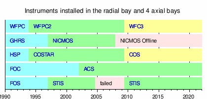

Hubble Space Telescope
 The Hubble Space Telescope during STS-125 | |||||||||||||||
| Mission type | Astronomy | ||||||||||||||
|---|---|---|---|---|---|---|---|---|---|---|---|---|---|---|---|
| Operator | STScI | ||||||||||||||
| COSPAR ID | 1990-037B | ||||||||||||||
| SATCAT no. | 20580 | ||||||||||||||
| Website | science | ||||||||||||||
| Mission duration | 36 years, 4 months, 21 days (ongoing)[1] | ||||||||||||||
| Spacecraft properties | |||||||||||||||
| Manufacturer |
| ||||||||||||||
| Launch mass | 11,110 kg (24,490 lb)[2] | ||||||||||||||
| Dimensions | 13.2 m × 4.2 m (43 ft × 14 ft)[2] | ||||||||||||||
| Power | 2800 W | ||||||||||||||
| Start of mission | |||||||||||||||
| Launch date | April 24, 1990, 12:33:51 UTC[3] | ||||||||||||||
| Rocket | Space Shuttle Discovery (STS-31) | ||||||||||||||
| Launch site | Kennedy, LC-39B | ||||||||||||||
| Contractor | Rockwell International | ||||||||||||||
| Deployment date | April 25, 1990[2] | ||||||||||||||
| Entered service | May 20, 1990[2] | ||||||||||||||
| End of mission | |||||||||||||||
| Decay date | 2030s (estimated)[4] | ||||||||||||||
| Orbital parameters | |||||||||||||||
| Reference system | Geocentric orbit[5] | ||||||||||||||
| Regime | Low Earth orbit | ||||||||||||||
| Eccentricity | approx. 0.0002 | ||||||||||||||
| Periapsis altitude | 470.0 km (292.0 mi) (as of 2026[update]) | ||||||||||||||
| Apoapsis altitude | 475.0 km (295.2 mi) (as of 2026[update]) | ||||||||||||||
| Inclination | 28.47° | ||||||||||||||
| Period | 94.0 minutes | ||||||||||||||
| Main telescope | |||||||||||||||
| Type | Ritchey–Chrétien reflector | ||||||||||||||
| Diameter | 2.4 m (7 ft 10 in)[6] | ||||||||||||||
| Focal length | 57.6 m (189 ft)[6] | ||||||||||||||
| Focal ratio | f/24 | ||||||||||||||
| Collecting area | 4.0 m2 (43 sq ft)[7] | ||||||||||||||
| Wavelengths | |||||||||||||||
| |||||||||||||||
Large Strategic Science Missions Astrophysics Division | |||||||||||||||
The Hubble Space Telescope (HST or Hubble) is a space telescope that was launched into low Earth orbit in 1990 and remains in operation. It was not the first space telescope, but it is one of the largest and most versatile, renowned as a vital research tool and as a public relations boon for astronomy. The Hubble Space Telescope is named after astronomer Edwin Hubble and is one of NASA's Great Observatories. The Space Telescope Science Institute (STScI) selects Hubble's targets and processes the resulting data, while the Goddard Space Flight Center (GSFC) controls the spacecraft.[8]
Hubble features a 2.4 m (7 ft 10 in) mirror, and its five main instruments observe in the ultraviolet, visible, and near-infrared regions of the electromagnetic spectrum. Hubble's orbit outside the distortion of Earth's atmosphere allows it to capture extremely high-resolution images with substantially lower background light than ground-based telescopes. It has recorded some of the most detailed visible light images, allowing a deep view into space. Many Hubble observations have led to breakthroughs in astrophysics, such as determining the rate of expansion of the universe.
The Hubble Space Telescope was funded and built in the 1970s by NASA with contributions from the European Space Agency. Its intended launch was in 1983, but the project was beset by technical delays, budget problems, and the 1986 Challenger disaster. Hubble was launched on STS-31 in 1990, but its main mirror had been ground incorrectly, resulting in spherical aberration that compromised the telescope's capabilities. The optics were corrected to their intended quality by a servicing mission, STS-61, in 1993.
Hubble is the only telescope designed to be maintained in space by astronauts. Five Space Shuttle missions repaired, upgraded, and replaced systems on the telescope, including all five of the main instruments. The fifth mission was initially canceled on safety grounds following the Columbia disaster (2003), but after NASA administrator Michael D. Griffin approved it, the servicing mission was completed in 2009. Hubble completed 30 years of operation in April 2020[1] and is predicted to last until 2030 to 2040.[4]
Hubble is the visible light telescope in NASA's Great Observatories program; other parts of the spectrum are covered by the Compton Gamma Ray Observatory, the Chandra X-ray Observatory, and the Spitzer Space Telescope (which covers the infrared bands).[9] The mid-IR-to-visible band successor to the Hubble telescope is the James Webb Space Telescope (JWST), which was launched on December 25, 2021, with the Nancy Grace Roman Space Telescope which was launched on August 30, 2026.[10][11][12][13]
Concept, design and aim
[edit]Proposals and precursors
[edit]In 1923, Hermann Oberth, considered a father of modern rocketry along with Robert H. Goddard and Konstantin Tsiolkovsky, published Die Rakete zu den Planetenräumen ("The Rocket into Planetary Space"), which mentioned how a telescope could be propelled into Earth orbit by a rocket.[14]
.jpg)
The history of the Hubble Space Telescope can be traced to 1946, to astronomer Lyman Spitzer's paper "Astronomical advantages of an extraterrestrial observatory".[15] In it, he discussed the two main advantages that a space-based observatory would have over ground-based telescopes. First, the angular resolution (the smallest separation at which objects can be clearly distinguished) would be limited only by diffraction, rather than by the turbulence in the atmosphere, which causes stars to twinkle, known to astronomers as seeing. At that time ground-based telescopes were limited to resolutions of 0.5–1.0 arcseconds, compared to a theoretical diffraction-limited resolution of about 0.05 arcsec for an optical telescope with a mirror 2.5 m (8 ft 2 in) in diameter. Second, a space-based telescope could observe infrared and ultraviolet light, which are strongly absorbed by the atmosphere of Earth.[15]
Spitzer devoted much of his career to pushing for the development of a space telescope.[16] In 1962, a report by the U.S. National Academy of Sciences recommended development of a space telescope as part of the space program, and in 1965, Spitzer was appointed as head of a committee given the task of defining scientific objectives for a large space telescope.[17]
.jpg)
Also crucial was the work of Nancy Grace Roman, the "Mother of Hubble".[18] Well before it became an official NASA project, she gave public lectures touting the scientific value of the telescope. After it was approved, she became the program scientist, setting up the steering committee in charge of making astronomer needs feasible to implement[19] and writing testimony to Congress throughout the 1970s to advocate continued funding of the telescope.[20] Her work as project scientist helped set the standards for NASA's operation of large scientific projects.[21]
.JPG)
Space-based astronomy had begun on a very small scale following World War II, as scientists made use of developments that had taken place in rocket technology. The first ultraviolet spectrum of the Sun was obtained in 1946,[22] and NASA launched the Orbiting Solar Observatory (OSO) to obtain UV, X-ray, and gamma-ray spectra in 1962.[23] An orbiting solar telescope was launched in 1962 by the United Kingdom as part of the Ariel programme, and in 1966 NASA launched the first Orbiting Astronomical Observatory (OAO) mission. OAO-1's battery failed after three days, terminating the mission. It was followed by Orbiting Astronomical Observatory 2 (OAO-2), which carried out ultraviolet observations of stars and galaxies from its launch in 1968 until 1972, well beyond its original planned lifetime of one year.[24]
The OSO and OAO missions demonstrated the important role space-based observations could play in astronomy. In 1968, NASA developed firm plans for a space-based reflecting telescope with a mirror 3 m (9.8 ft) in diameter, known provisionally as the Large Orbiting Telescope or Large Space Telescope (LST), with a launch slated for 1979. These plans emphasized the need for crewed maintenance missions to the telescope to ensure such a costly program had a lengthy working life, and the concurrent development of plans for the reusable Space Shuttle indicated that the technology to allow this was soon to become available.[25]
Quest for funding
[edit]The continuing success of the OAO program encouraged increasingly strong consensus within the astronomical community that the LST should be a major goal. In 1970, NASA established two committees, one to plan the engineering side of the space telescope project, and the other to determine the scientific goals of the mission. Once these had been established, the next hurdle for NASA was to obtain funding for the instrument, which would be far more costly than any Earth-based telescope. The U.S. Congress questioned many aspects of the proposed budget for the telescope and forced cuts in the budget for the planning stages, which at the time consisted of very detailed studies of potential instruments and hardware for the telescope. In 1974, public spending cuts led to Congress deleting all funding for the telescope project.[26]

In 1977, then NASA Administrator James C. Fletcher proposed a token $5 million for Hubble in NASA's budget. Then NASA Associate Administrator for Space Science, Noel Hinners, instead cut all funding for Hubble, gambling that this would galvanize the scientific community into fighting for full funding. As Hinners recalls:[27]
It was clear that year that we weren't going to be able to get a full-up start. There was some opposition on [Capitol] Hill to getting a new start on [Hubble]. It was driven, in large part as I recall, by the budget situation. Jim Fletcher proposed that we put in five million as a placeholder. I didn't like that idea. It was, in today's vernacular, a "sop" to the astronomy community. "There's something in there, so all is well".
I figured in my own little head that to get that community energized we'd be better off zeroing it out. Then they would say, "Whoa, we're in deep trouble", and it would marshal the troops. So I advocated that we not put anything in. I don't remember any of the detailed discussions or whether there were any, but Jim went along with that so we zeroed it out. It had, from my perspective, the desired impact of stimulating the astronomy community to renew their efforts on the lobbying front. While I like to think in hindsight it was a brilliant political move, I'm not sure I thought it through all that well. It was something that was spur of the moment.
[...] five million would let them think that all is well anyway, but it's not. So let's give them a message. My own thinking, get them stimulated to get into action. Zeroing it out would certainly give that message. I think it was as simple as that. Didn't talk to anybody else about doing it first, just, "Let's go do that". Voila, it worked. Don't know whether I'd do that again.
The political ploy worked. In response to Hubble being zeroed out of NASA's budget, a nationwide lobbying effort was coordinated among astronomers. Many astronomers met congressmen and senators in person, and large-scale letter-writing campaigns were organized. The National Academy of Sciences published a report emphasizing the need for a space telescope, and eventually, the Senate agreed to half the budget that had originally been approved by Congress.[28]
The funding issues led to a reduction in the scale of the project, with the proposed mirror diameter reduced from 3 m to 2.4 m, both to cut costs[29] and to allow a more compact and effective configuration for the telescope hardware. A proposed precursor 1.5 m (4 ft 11 in) space telescope to test the systems to be used on the main satellite was dropped, and budgetary concerns also prompted collaboration with the European Space Agency (ESA). ESA agreed to provide funding and supply one of the first generation instruments for the telescope, as well as the solar cells that would power it, and staff to work on the telescope in the United States, in return for European astronomers being guaranteed at least 15% of the observing time on the telescope.[30] Congress eventually approved funding of $36 million for 1978, and the design of the LST began in earnest, aiming for a launch date of 1983.[28] In 1983, the telescope was named after Edwin Hubble,[31] who confirmed one of the greatest scientific discoveries of the 20th century, made by Georges Lemaître, that the universe is expanding.[32]
Construction and engineering
[edit]
Once the Space Telescope project had been given the go-ahead, work on the program was divided among many institutions. Marshall Space Flight Center (MSFC) was given responsibility for the design, development, and construction of the telescope, while Goddard Space Flight Center was given overall control of the scientific instruments and ground-control center for the mission.[33] MSFC commissioned the optics company Perkin-Elmer to design and build the optical telescope assembly (OTA) and Fine Guidance Sensors for the space telescope. Lockheed was commissioned to construct and integrate the spacecraft in which the telescope would be housed.[34]
Optical telescope assembly
[edit]Optically, the HST is a Cassegrain reflector of Ritchey–Chrétien design, as are most large professional telescopes. This design, with two hyperbolic mirrors, is known for good imaging performance over a wide field of view, with the disadvantage that the mirrors have shapes that are hard to fabricate and test. The mirror and optical systems of the telescope determine the final performance, and they were designed to exacting specifications. Optical telescopes typically have mirrors polished to an accuracy of about a tenth of the wavelength of visible light, but the Space Telescope was to be used for observations from the visible through the ultraviolet (shorter wavelengths) and was specified to be diffraction limited to take full advantage of the space environment. Therefore, its mirror needed to be polished to an accuracy of 10 nanometers, or about 1/65 of the wavelength of red light.[35] On the long wavelength end, the OTA was not designed with optimum infrared performance in mind, e.g. the mirrors are kept at stable (and warm, about 15°C) temperatures by heaters. This limits Hubble's performance as an infrared telescope.[36]
.jpg)
Perkin-Elmer (PE) intended to use custom-built and extremely sophisticated computer-controlled polishing machines to grind the mirror to the required shape.[34] However, in case their cutting-edge technology ran into difficulties, NASA demanded that PE sub-contract to Kodak to construct a back-up mirror using traditional mirror-polishing techniques.[37] (The team of Kodak and Itek also bid on the original mirror polishing work. Their bid called for the two companies to double-check each other's work, which would have almost certainly caught the polishing error that later caused problems.)[38] The Kodak mirror is now on permanent display at the National Air and Space Museum.[39][40] An Itek mirror built as part of the effort is now used in the 2.4 m telescope at the Magdalena Ridge Observatory.[41]
Construction of the Perkin-Elmer mirror began in 1979, starting with a blank manufactured by Corning from their ultra-low expansion glass. To keep the mirror's weight to a minimum it consisted of top and bottom plates, each 25 mm (0.98 in) thick, sandwiching a honeycomb lattice. Perkin-Elmer simulated microgravity by supporting the mirror from the back with 130 rods that exerted varying amounts of force.[42] This ensured the mirror's final shape would be correct and to specification when deployed. Mirror polishing continued until May 1981. NASA reports at the time questioned Perkin-Elmer's managerial structure, and the polishing began to slip behind schedule and over budget. To save money, NASA halted work on the back-up mirror and moved the launch date of the telescope to October 1984.[43] The mirror was completed by the end of 1981; it was washed using 9,100 L (2,000 imp gal; 2,400 US gal) of hot, deionized water and then received a reflective coating of 65‑nm‑thick aluminum and a protective coating of 25‑nm‑thick magnesium fluoride.[36][44]

Doubts continued to be expressed about Perkin-Elmer's competence on a project of this importance, as their budget and timescale for producing the rest of the OTA continued to inflate. In response to a schedule described as "unsettled and changing daily", NASA postponed the launch date of the telescope until April 1985. Perkin-Elmer's schedules continued to slip at a rate of about one month per quarter, and at times delays reached one day for each day of work. NASA was forced to postpone the launch date until March and then September 1986. By this time, the total project budget had risen to $1.175 billion.[45]
Spacecraft systems
[edit]The spacecraft in which the telescope and instruments were to be housed was another major engineering challenge. It would have to withstand frequent passages from direct sunlight into the darkness of Earth's shadow, which would cause major changes in temperature, while being stable enough to allow extremely accurate pointing of the telescope. A shroud of multi-layer insulation keeps the temperature within the telescope stable and surrounds a light aluminum shell in which the telescope and instruments sit. Within the shell, a graphite-epoxy frame keeps the working parts of the telescope firmly aligned.[46] Because graphite composites are hygroscopic, there was a risk that water vapor absorbed by the truss while in Lockheed's clean room would later be expressed in the vacuum of space; resulting in the telescope's instruments being covered by ice. To reduce that risk, a nitrogen gas purge was performed before launching the telescope into space.[47]
As well as electrical power systems, the Pointing Control System controls HST orientation using five types of sensors (magnetic sensors, optical sensors, and six gyroscopes) and two types of actuators (reaction wheels and magnetic torquers).[48]
While construction of the spacecraft in which the telescope and instruments would be housed proceeded somewhat more smoothly than the construction of the OTA, Lockheed experienced some budget and schedule slippage, and by the summer 1985, construction of the spacecraft was 30% over budget and three months behind schedule. An MSFC report said Lockheed tended to rely on NASA directions rather than take their own initiative in the construction.[49]
Computer systems and data processing
[edit]
The two initial, primary computers on the HST were the 1.25 MHz DF-224 system, built by Rockwell Autonetics, which contained three redundant CPUs, and two redundant NSSC-1 (NASA Standard Spacecraft Computer, Model 1) systems, developed by Westinghouse and GSFC using diode–transistor logic (DTL). A co-processor for the DF-224 was added during Servicing Mission 1 in 1993, which consisted of two redundant strings of an Intel-based 80386 processor with an 80387 math co-processor.[50] The DF-224 and its 386 co-processor were replaced by a 25 MHz Intel-based 80486 processor system during Servicing Mission 3A in 1999.[51] The new computer is 20 times faster, with six times more memory, than the DF-224 it replaced. It increases throughput by moving some computing tasks from the ground to the spacecraft and saves money by allowing the use of modern programming languages.[52]
Additionally, some of the science instruments and components had their own embedded microprocessor-based control systems. The MATs (Multiple Access Transponder) components, MAT-1 and MAT-2, use Hughes Aircraft CDP1802CD microprocessors.[53] The Wide Field and Planetary Camera (WFPC) also used an RCA 1802 microprocessor (or possibly the older 1801 version).[54] The WFPC-1 was replaced by the WFPC-2 during Servicing Mission 1 in 1993, which was then replaced by the Wide Field Camera 3 (WFC3) during Servicing Mission 4 in 2009. The upgrade extended Hubble's capability of seeing deeper into the universe and providing images in three broad regions of the spectrum.[55][56]
Initial instruments
[edit]
When launched, the HST carried five scientific instruments: the Wide Field and Planetary Camera (WF/PC), Goddard High Resolution Spectrograph (GHRS), High Speed Photometer (HSP), Faint Object Camera (FOC) and the Faint Object Spectrograph (FOS). WF/PC used a radial instrument bay, and the other four instruments were each installed in an axial instrument bay.[57]
WF/PC was a high-resolution imaging device primarily intended for optical observations. It was built by NASA's Jet Propulsion Laboratory, and incorporated a set of 48 filters isolating spectral lines of particular astrophysical interest. The instrument contained eight charge-coupled device (CCD) chips divided between two cameras, each using four CCDs. Each CCD has a resolution of 0.64 megapixels.[58] The wide field camera (WFC) covered a large angular field at the expense of resolution, while the planetary camera (PC) took images at a longer effective focal length than the WF chips, giving it a greater magnification.[57]
The Goddard High Resolution Spectrograph (GHRS) was a spectrograph designed to operate in the ultraviolet. It was built by the Goddard Space Flight Center and could achieve a spectral resolution of 90,000.[59] Also optimized for ultraviolet observations were the FOC and FOS, which were capable of the highest spatial resolution of any instruments on Hubble. Rather than CCDs, these three instruments used photon-counting digicons as their detectors. The FOC was constructed by ESA, while the University of California, San Diego, and Martin Marietta Corporation built the FOS.[57]
The final instrument was the HSP, designed and built at the University of Wisconsin–Madison. It was optimized for visible and ultraviolet light observations of variable stars and other astronomical objects varying in brightness. It could take up to 100,000 measurements per second with a photometric accuracy of about 2% or better.[60]
HST's guidance system can also be used as a scientific instrument. Its three Fine Guidance Sensors (FGS) are primarily used to keep the telescope accurately pointed during an observation, but can also be used to carry out extremely accurate astrometry; measurements accurate to within 0.0003 arcseconds have been achieved.[61]
Ground support
[edit]
The Space Telescope Science Institute (STScI) is responsible for the scientific operation of the telescope and the delivery of data products to astronomers. STScI is operated by the Association of Universities for Research in Astronomy (AURA) and is physically located in Baltimore, Maryland on the Homewood campus of Johns Hopkins University, one of the 39 U.S. universities and seven international affiliates that make up the AURA consortium. STScI was established in 1981[62][63] after something of a power struggle between NASA and the scientific community at large. NASA had wanted to keep this function in-house, but scientists wanted it to be based in an academic establishment.[64][65] The Space Telescope European Coordinating Facility (ST-ECF), established at Garching bei München near Munich in 1984, provided similar support for European astronomers until 2011, when these activities were moved to the European Space Astronomy Centre.[66]
One complex task that falls to STScI is scheduling observations for the telescope.[67] Hubble is in a low-Earth orbit to enable servicing missions, which results in most astronomical targets being occulted by the Earth for slightly less than half of each orbit. Observations cannot take place when the telescope passes through the South Atlantic Anomaly due to elevated radiation levels, and there are also sizable exclusion zones around the Sun (precluding observations of Mercury), Moon and Earth. The solar avoidance angle is about 50°, to keep sunlight from illuminating any part of the OTA. Earth and Moon avoidance keeps bright light out of the FGSs, and keeps scattered light from entering the instruments. If the FGSs are turned off, the Moon and Earth can be observed. Earth observations were used very early in the program to generate flat-fields for the WFPC1 instrument. There is a so-called continuous viewing zone (CVZ), within roughly 24° of Hubble's orbital poles, in which targets are not occulted for long periods.[68][69][70]


Due to the precession of the orbit, the location of the CVZ moves slowly over a period of eight weeks. Because the limb of the Earth is always within about 30° of regions within the CVZ, the brightness of scattered earthshine may be elevated for long periods during CVZ observations. Hubble orbits in low Earth orbit at an altitude of approximately 540 kilometers (340 mi) and an inclination of 28.5°.[5] The position along its orbit changes over time in a way that is not accurately predictable. The density of the upper atmosphere varies according to many factors, and this means Hubble's predicted position for six weeks' time could be in error by up to 4,000 km (2,500 mi). Observation schedules are typically finalized only a few days in advance, as a longer lead time would mean there was a chance the target would be unobservable by the time it was due to be observed.[71] Engineering support for HST is provided by NASA and contractor personnel at the Goddard Space Flight Center in Greenbelt, Maryland, 48 km (30 mi) south of the STScI. Hubble's operation is monitored 24 hours per day by four teams of flight controllers who make up Hubble's Flight Operations Team.[67]
Challenger disaster, delays, and eventual launch
[edit]

By January 1986, the planned launch date for Hubble on 18 October as part of STS-61-J looked feasible, but the Challenger disaster brought the U.S. space program to a halt, grounded the Shuttle fleet, and forced the launch to be postponed for several years. During this delay the telescope was kept in a clean room, powered up and purged with nitrogen, until a launch could be rescheduled. This costly situation (about $6 million per month) pushed the overall costs of the project higher. However, this delay allowed time for engineers to perform extensive tests, swap out a possibly failure-prone battery, and make other improvements.[72] Furthermore, the ground software needed to control Hubble was not ready in 1986, and was barely ready by the 1990 launch.[73] Following the resumption of shuttle flights, Space Shuttle Discovery successfully launched Hubble on April 24, 1990, as part of the STS-31 mission.[74]
At launch, NASA had spent approximately $4.7 billion in inflation-adjusted 2010 dollars on the project.[75] Hubble's cumulative costs are estimated to be about $11.3 billion in 2015 dollars, which include all subsequent servicing costs, but not ongoing operations, making it the most expensive science mission in NASA history.[76]
List of Hubble instruments
[edit]Hubble accommodates five science instruments at a given time, plus the Fine Guidance Sensors, which are mainly used for aiming the telescope but are occasionally used for scientific astrometry measurements. Early instruments were replaced with more advanced ones during the Shuttle servicing missions. COSTAR was a corrective optics device rather than a science instrument, but occupied one of the four axial instrument bays.
Since the final servicing mission in 2009, the four active instruments have been ACS, COS, STIS and WFC3. NICMOS is kept in hibernation, but may be revived if WFC3 were to fail in the future.
- Advanced Camera for Surveys (ACS; 2002–present)
- Cosmic Origins Spectrograph (COS; 2009–present)
- Corrective Optics Space Telescope Axial Replacement (COSTAR; 1993–2009)
- Faint Object Camera (FOC; 1990–2002)
- Faint Object Spectrograph (FOS; 1990–1997)
- Fine Guidance Sensor (FGS; 1990–present)
- Goddard High Resolution Spectrograph (GHRS/HRS; 1990–1997)
- High Speed Photometer (HSP; 1990–1993)
- Near Infrared Camera and Multi-Object Spectrometer (NICMOS; 1997–present, hibernating since 2008)
- Space Telescope Imaging Spectrograph (STIS; 1997–present (non-operative 2004–2009))
- Wide Field and Planetary Camera (WFPC; 1990–1993)
- Wide Field and Planetary Camera 2 (WFPC2; 1993–2009)
- Wide Field Camera 3 (WFC3; 2009–present)
Of the former instruments, three (COSTAR, FOS and WFPC2) are displayed in the Smithsonian National Air and Space Museum.[77][78][79] The FOC is in the Dornier museum, Germany.[80] The HSP is in the Space Place at the University of Wisconsin–Madison.[81] The first WFPC was dismantled, and some components were then re-used in WFC3.[82][83]
Flawed mirror
[edit]
Within weeks of the launch of the telescope, the returned images indicated a serious problem with the optical system. Although the first images appeared to be sharper than those of ground-based telescopes, Hubble failed to achieve a final sharp focus and the best image quality obtained was drastically lower than expected. Images of point sources spread out over a radius of more than one arcsecond, instead of having a point spread function (PSF) concentrated within a circle 0.1 arcseconds (485 nrad) in diameter, as had been specified in the design criteria.[84][85]
Analysis of the flawed images revealed that the primary mirror had been polished to the wrong shape. Although it was believed to be one of the most precisely figured optical mirrors ever made, smooth to about 10 nanometers,[35] the outer perimeter was too flat by about 2200 nanometers (about 1⁄450 mm or 1⁄11000 inch).[86] This difference was catastrophic, introducing severe spherical aberration, a flaw in which light reflecting off the edge of a mirror focuses on a different point from the light reflecting off its center.[87]
The effect of the mirror flaw on scientific observations depended on the particular observation. The core of the aberrated PSF was sharp enough to permit high-resolution observations of bright objects, and spectroscopy of point sources was affected only through a sensitivity loss; however, the loss of light to the large, out-of-focus halo severely reduced the usefulness of the telescope for faint objects or high-contrast imaging. This meant nearly all the cosmological programs were essentially impossible, since they required observation of exceptionally faint objects.[87] This led politicians to question NASA's competence, scientists to rue the cost which could have gone to more productive endeavors, and comedians to make jokes about NASA and the telescope. In the 1991 comedy The Naked Gun 2½: The Smell of Fear, in a scene where historical disasters are displayed, Hubble is pictured with the Titanic and the Hindenburg.[88][89] Nonetheless, during the first three years of the Hubble mission, before the optical corrections, the telescope carried out a large number of productive observations of less demanding targets.[90] The error was well characterized and stable, enabling astronomers to partially compensate for the defective mirror by using sophisticated image processing techniques such as deconvolution.[91]
Origin of the problem
[edit]
A commission headed by Lew Allen, director of the Jet Propulsion Laboratory, was established to determine how the error could have arisen. The Allen Commission found that a reflective null corrector, a testing device used to achieve a properly shaped non-spherical mirror, had been incorrectly assembled. (One lens was out of position by 1.3 mm (0.051 in).)[92] During the initial grinding and polishing of the mirror, Perkin-Elmer analyzed its surface with two conventional refractive null correctors. However, for the final manufacturing step (figuring), they switched to the custom-built reflective null corrector, designed explicitly to meet very strict tolerances. The incorrect assembly of this device resulted in the mirror being ground very precisely but to the wrong shape. During fabrication, a few tests using conventional null correctors correctly reported spherical aberration. But these results were dismissed, thus missing the opportunity to catch the error, because the reflective null corrector was considered more accurate.[93]
The commission blamed the failings primarily on Perkin-Elmer. Relations between NASA and the optics company had been severely strained during the telescope construction, due to frequent schedule slippage and cost overruns. NASA found that Perkin-Elmer did not review or supervise the mirror construction adequately, did not assign its best optical scientists to the project (as it had for the prototype), and in particular did not involve the optical designers in the construction and verification of the mirror. While the commission heavily criticized Perkin-Elmer for these managerial failings, NASA was also criticized for not picking up on the quality control shortcomings, such as relying totally on test results from a single instrument.[94]
Design of a solution
[edit]
Many feared that Hubble would be abandoned.[95] Dr. Charles Pellerin, director of Astrophysics division, gathered a team of experts to figure out a solution for the problem. Working with his budget analyst, Pellerin reprioritized or cancelled division activities to allocate $60 million for the repair mission.[96] He publicly committed to repairing Hubble by 1994.[97] The design of the telescope had always incorporated servicing missions, and astronomers immediately began to seek potential solutions to the problem that could be applied at the first servicing mission, scheduled for 1993. While Kodak had ground a back-up mirror for Hubble, it would have been impossible to replace the mirror in orbit, and too expensive and time-consuming to bring the telescope back to Earth for a refit. Instead, the fact that the mirror had been ground so precisely to the wrong shape led to the design of new optical components with exactly the same error but in the opposite sense, to be added to the telescope at the servicing mission, effectively acting as "spectacles" to correct the spherical aberration.[98][99]
The first step was a precise characterization of the error in the main mirror. Working backwards from images of point sources, astronomers determined that the conic constant of the mirror as built was −1.01390±0.0002, instead of the intended −1.00230.[100][101] The same number was also derived by analyzing the null corrector used by Perkin-Elmer to figure the mirror, as well as by analyzing interferograms obtained during ground testing of the mirror.[102]
Because of the way the HST's instruments were designed, two different sets of correctors were required. The design of the Wide Field and Planetary Camera 2, already planned to replace the existing WF/PC, included relay mirrors to direct light onto the four separate charge-coupled device (CCD) chips making up its two cameras. An inverse error built into their surfaces could completely cancel the aberration of the primary. However, the other instruments lacked any intermediate surfaces that could be configured in this way, and so required an external correction device.[103]
The Corrective Optics Space Telescope Axial Replacement (COSTAR) system was designed to correct the spherical aberration for light focused at the FOC, FOS, and GHRS. It consists of two mirrors in the light path with one ground to correct the aberration.[104] To fit the COSTAR system onto the telescope, one of the other instruments had to be removed, and astronomers selected the High Speed Photometer to be sacrificed.[103] By 2002, all the original instruments requiring COSTAR had been replaced by instruments with their own corrective optics.[105] COSTAR was then removed and returned to Earth in 2009 where it is exhibited at the National Air and Space Museum in Washington, D.C.[77] The area previously used by COSTAR is now occupied by the Cosmic Origins Spectrograph.[106]
Servicing missions and new instruments
[edit]Servicing overview
[edit]
Hubble was designed to accommodate regular servicing and equipment upgrades while in orbit. Instruments and limited life items were designed as orbital replacement units.[107] Five servicing missions (SM 1, 2, 3A, 3B, and 4) were flown by NASA Space Shuttles, the first in December 1993 and the last in May 2009.[108] Servicing missions were delicate operations that began with maneuvering to intercept the telescope in orbit and carefully retrieving it with the shuttle's mechanical arm. The necessary work was then carried out in multiple tethered spacewalks over a period of four to five days. After a visual inspection of the telescope, astronauts conducted repairs, replaced failed or degraded components, upgraded equipment, and installed new instruments. Once work was completed, the telescope was redeployed, typically after boosting to a higher orbit to address the orbital decay caused by atmospheric drag.[109]
Servicing Mission 1
[edit]
The first Hubble servicing mission was scheduled for 1993 before the mirror problem was discovered. It assumed greater importance, as the astronauts would need to do extensive work to install corrective optics; failure would have resulted in either abandoning Hubble or accepting its permanent disability. Other components failed before the mission, causing the repair cost to rise to $500 million (not including the cost of the shuttle flight). A successful repair would help demonstrate the viability of building Space Station Alpha.[110]
STS-49 in 1992 demonstrated the difficulty of space work. While its rescue of Intelsat 603 received praise, the astronauts had taken possibly reckless risks in doing so. Neither the rescue nor the unrelated assembly of prototype space station components occurred as the astronauts had trained, causing NASA to reassess planning and training, including for the Hubble repair. The agency assigned to the mission Story Musgrave (who had worked on satellite repair procedures since 1976) and six other experienced astronauts, including two from STS-49. The first mission director since Project Apollo[clarification needed] would coordinate a crew with 16 previous shuttle flights. The astronauts were trained to use about a hundred specialized tools.[111]
Heat had been the problem on prior spacewalks, which occurred in sunlight. Hubble needed to be repaired out of sunlight. Musgrave discovered during vacuum training, seven months before the mission, that spacesuit gloves did not sufficiently protect against the cold of space. After STS-57 confirmed the issue in orbit, NASA quickly changed equipment, procedures, and flight plan. Seven total mission simulations occurred before launch, the most thorough preparation in shuttle history. No complete Hubble mockup existed, so the astronauts studied many separate models (including one at the Smithsonian) and mentally combined their varying and contradictory details.[112]
Service Mission 1 flew aboard Endeavour in December 1993, and involved installation of several instruments and other equipment over ten days. Most importantly, the High Speed Photometer was replaced with the COSTAR corrective optics package, and WF/PC was replaced with the Wide Field and Planetary Camera 2 (WFPC2) with an internal optical correction system. The solar arrays and their drive electronics were also replaced, as well as four gyroscopes in the telescope pointing system, two electrical control units and other electrical components, and two magnetometers. The onboard computers were upgraded with added coprocessors, and Hubble's orbit was boosted.[86]
On January 13, 1994, NASA declared the mission a complete success and showed the first sharper images.[113] The mission was one of the most complex performed to that date, involving five long extra-vehicular activity periods. Its success was a boon for NASA, as well as for the astronomers who now had a more capable space telescope.[78][114]
Servicing Mission 2
[edit].jpg)
Servicing Mission 2, flown by Discovery in February 1997, replaced the GHRS and the FOS with the Space Telescope Imaging Spectrograph (STIS) and the Near Infrared Camera and Multi-Object Spectrometer (NICMOS), replaced an Engineering and Science Tape Recorder with a new Solid State Recorder, and repaired thermal insulation.[115] NICMOS contained a heat sink of solid nitrogen to reduce the thermal noise from the instrument, but shortly after it was installed, an unexpected thermal expansion resulted in part of the heat sink coming into contact with an optical baffle. This led to an increased warming rate for the instrument and reduced its original expected lifetime of 4.5 years to about two years.[116]
Servicing Mission 3A
[edit]Servicing Mission 3A, flown by Discovery, took place in December 1999, and was a split-off from Servicing Mission 3 after three of the six onboard gyroscopes had failed. The fourth failed a few weeks before the mission, rendering the telescope incapable of performing scientific observations. The mission replaced all six gyroscopes, replaced a Fine Guidance Sensor and the computer, installed a Voltage/temperature Improvement Kit (VIK) to prevent battery overcharging, and replaced thermal insulation blankets.[117]
Servicing Mission 3B
[edit]Servicing Mission 3B flown by Columbia in March 2002 saw the installation of a new instrument, with the FOC (which, except for the Fine Guidance Sensors when used for astrometry, was the last of the original instruments) being replaced by the Advanced Camera for Surveys (ACS). This meant COSTAR was no longer required, since all new instruments had built-in correction for the main mirror aberration.[105] The mission also revived NICMOS by installing a closed-cycle cooler[116] and replaced the solar arrays for the second time, providing 30 percent more power.[118]
Servicing Mission 4
[edit]

Plans called for Hubble to be serviced in February 2005, but the Columbia disaster in 2003, in which the orbiter disintegrated on re-entry into the atmosphere, had wide-ranging effects to the Hubble program and other NASA missions. NASA Administrator Sean O'Keefe decided all future shuttle missions had to be able to reach the safe haven of the International Space Station should in-flight problems develop. As no shuttles were capable of reaching both HST and the space station during the same mission, future manned service missions were canceled.[119] This decision was criticized by numerous astronomers who felt Hubble was valuable enough to merit the human risk.[120] HST's planned successor, the James Webb Space Telescope (JWST), by 2004 was not expected to launch until at least 2011. JWST was eventually launched in December 2021.[121] A gap in space-observing capabilities between a decommissioning of Hubble and the commissioning of a successor was of major concern to many astronomers, given the significant scientific impact of HST.[122] The consideration that JWST will not be located in low Earth orbit, and therefore cannot be easily upgraded or repaired in the event of an early failure, only made concerns more acute. On the other hand, NASA officials were concerned that continuing to service Hubble would consume funds from other programs and delay the JWST.[123]
In January 2004, O'Keefe said he would review his decision to cancel the final servicing mission to HST, due to public outcry and requests from Congress for NASA to look for a way to save it. The National Academy of Sciences convened an official panel, which recommended in July 2004 that the HST should be preserved despite the apparent risks. Their report urged "NASA should take no actions that would preclude a space shuttle servicing mission to the Hubble Space Telescope".[124] In August 2004, O'Keefe asked Goddard Space Flight Center to prepare a detailed proposal for a robotic service mission. These plans were later canceled, the robotic mission being described as "not feasible".[125] In late 2004, several Congressional members, led by Senator Barbara Mikulski, held public hearings and carried on a fight with much public support (including thousands of letters from school children across the U.S.) to get the Bush Administration and NASA to reconsider the decision to drop plans for a Hubble rescue mission.[126]

The nomination in April 2005 of a new NASA Administrator, Michael D. Griffin, changed the situation, as Griffin stated he would consider a crewed servicing mission.[127] Soon after his appointment Griffin authorized Goddard to proceed with preparations for a crewed Hubble maintenance flight, saying he would make the final decision after the next two shuttle missions. In October 2006 Griffin gave the final go-ahead, and the 11-day mission by Atlantis was scheduled for October 2008. Hubble's main data-handling unit failed in September 2008,[128] halting all reporting of scientific data until its back-up was brought online on October 25, 2008.[129] Since a failure of the backup unit would leave the HST helpless, the service mission was postponed to incorporate a replacement for the primary unit.[128]
Servicing Mission 4 (SM4), flown by Atlantis in May 2009, was the last scheduled shuttle mission for HST.[106][130] SM4 installed the replacement data-handling unit, repaired the ACS and STIS systems, installed improved nickel–hydrogen batteries, and replaced other components including all six gyroscopes. SM4 also installed two new observation instruments: Wide Field Camera 3 (WFC3) and the Cosmic Origins Spectrograph (COS)[131] and the Soft Capture and Rendezvous System, which will enable the future rendezvous, capture, and safe disposal of Hubble by either a crewed or robotic mission.[132] Except for the ACS's High Resolution Channel, which could not be repaired and was disabled,[133][134][135] the work accomplished during SM4 rendered the telescope fully functional.[106]
Major projects
[edit]
Since the start of the program, a number of research projects have been carried out, some of them almost solely with Hubble, others coordinated facilities such as Chandra X-ray Observatory and ESO's Very Large Telescope. Although the Hubble observatory is nearing the end of its life, there are still major projects scheduled for it. One example is the current (2022) ULLYSES project (Ultraviolet Legacy Library of Young Stars as Essential Standards) which will last for three years to observe a set of high- and low-mass young stars and will shed light on star formation and composition. Another is the OPAL project (Outer Planet Atmospheres Legacy), which is focused on understanding the evolution and dynamics of the atmosphere of the outer planets (such as Jupiter and Uranus) by making baseline observations over an extended period.[136]
Cosmic Assembly Near-infrared Deep Extragalactic Legacy Survey
[edit]In an August 2013 press release, CANDELS was referred to as "the largest project in the history of Hubble". The survey "aims to explore galactic evolution in the early Universe, and the first seeds of cosmic structure at less than one billion years after the Big Bang."[137] The CANDELS project site describes the survey's goals as the following:[138]
The Cosmic Assembly Near-IR Deep Extragalactic Legacy Survey is designed to document the first third of galactic evolution from z = 8 to 1.5 via deep imaging of more than 250,000 galaxies with WFC3/IR and ACS. It will also find the first Type Ia SNe beyond z > 1.5 and establish their accuracy as standard candles for cosmology. Five premier multi-wavelength sky regions are selected; each has multi-wavelength data from Spitzer and other facilities, and has extensive spectroscopy of the brighter galaxies. The use of five widely separated fields mitigates cosmic variance and yields statistically robust and complete samples of galaxies down to 109 solar masses out to z ~ 8.
Frontier Fields program
[edit]
The program, officially named "Hubble Deep Fields Initiative 2012", is aimed to advance the knowledge of early galaxy formation by studying high-redshift galaxies in blank fields with the help of gravitational lensing to see the "faintest galaxies in the distant universe".[139] The Frontier Fields web page describes the goals of the program being:
- to reveal hitherto inaccessible populations of z = 5–10 galaxies that are ten to fifty times fainter intrinsically than any presently known
- to solidify our understanding of the stellar masses and star formation histories of sub-L* galaxies at the earliest times
- to provide the first statistically meaningful morphological characterization of star forming galaxies at z > 5
- to find z > 8 galaxies stretched out enough by cluster lensing to discern internal structure and/or magnified enough by cluster lensing for spectroscopic follow-up.[140]
Cosmic Evolution Survey (COSMOS)
[edit]The Cosmic Evolution Survey (COSMOS)[141] is an astronomical survey designed to probe the formation and evolution of galaxies as a function of both cosmic time (redshift) and the local galaxy environment. The survey covers a two square degree equatorial field with spectroscopy and X-ray to radio imaging by most of the major space-based telescopes and a number of large ground based telescopes,[142] making it a key focus region of extragalactic astrophysics. COSMOS was launched in 2006 as the largest project pursued by the Hubble Space Telescope at the time, and still is the largest continuous area of sky covered for the purposes of mapping deep space in blank fields, 2.5 times the area of the moon on the sky and 17 times larger than the largest of the CANDELS regions. The COSMOS scientific collaboration that was forged from the initial COSMOS survey is the largest and longest-running extragalactic collaboration, known for its collegiality and openness. The study of galaxies in their environment can be done only with large areas of the sky, larger than a half square degree.[143] More than two million galaxies are detected, spanning 90% of the age of the Universe. The COSMOS collaboration is led by Caitlin Casey, Jeyhan Kartaltepe, and Vernesa Smolcic and involves more than 200 scientists in a dozen countries.[141]
Cluster Lensing and Supernova survey with Hubble
[edit]The Cluster Lensing and Supernova survey with Hubble (CLASH) was a Treasury Program from 2010 to 2013 conducted by the Hubble Space Telescope to observe 25 massive galaxy clusters by using gravitational lensing. CLASH aimed to examine the distribution of dark matter and dark energy in massive galaxy clusters with the new instruments installed in 2009. Imagery showing the effects of gravitational lensing is one means of detecting dark matter and dark energy, and CLASH focused on trying to gain a better understanding of both mysterious topics.[144]
Photomosaic of the Andromeda Galaxy
[edit]
The Panchromatic Hubble Andromeda Treasury and Panchromatic Hubble Andromeda Southern Treasury (PHAT and PHAST) were observations done by Hubble from July 2010 to October 2013 to map the northern half of the Andromeda Galaxy and from December 2021 to January 2024 to map the southern half. Andromeda is the nearest large galaxy to the Milky Way Galaxy and Hubble created the highest resolution and most detailed photomosaic ever of Andromeda. Two hundred million stars can be seen in this combined image of both Treasury Programs out of a total one trillion stars in Andromeda. Each star looks like a grain of sand. The northern half, PHAT, was mapped in near-ultraviolet, visible, and near-infrared wavelengths in 828 orbits and was released in January 2015. The southern half, PHAST, was mapped in near-ultraviolet and visible wavelengths in 195 orbits and was released in January 2025. Observing Andromeda in this detail is the best alternative to observing the Milky Way Galaxy because Earth is within the Milky Way and cannot observe most of the Milky Way due to the galaxy itself blocking observations of 20% of the sky and most of the galaxy. To achieve this mosaic 1,023 Hubble orbits were needed. The mosaic image is made up of at least 2.5 billion pixels.[146][147][148][149]
Public use
[edit]Proposal process
[edit]
Anyone can apply for time on the telescope; there are no restrictions on nationality or academic affiliation, but funding for analysis is available only to U.S. institutions.[150] Competition for time on the telescope is intense, with about one-fifth of the proposals submitted in each cycle earning time on the schedule.[151][152]
Calls for proposals are issued roughly annually, with time allocated for a cycle lasting about one year. Proposals are divided into several categories; "general observer" proposals are the most common, covering routine observations. "Snapshot observations" are those in which targets require only 45 minutes or less of telescope time, including overheads such as acquiring the target. Snapshot observations are used to fill in gaps in the telescope schedule that cannot be filled by regular general observer programs.[153]
Astronomers may make "Target of Opportunity" proposals, in which observations are scheduled if a transient event covered by the proposal occurs during the scheduling cycle. In addition, up to 10% of the telescope time is designated "director's discretionary" (DD) time. Astronomers can apply to use DD time at any time of year, and it is typically awarded for study of unexpected transient phenomena such as supernovae.[154]
Other uses of DD time have included the observations that led to views of the Hubble Deep Field and Hubble Ultra Deep Field, and in the first four cycles of telescope time, observations that were carried out by amateur astronomers.[155][156]
In 2012, the ESA held a contest for public image processing of Hubble data to encourage the discovery of "hidden treasures" in the raw Hubble data.[157][158]
Use by amateur astronomers
[edit]
The first director of STScI, Riccardo Giacconi, announced in 1986 that he intended to devote some of his director discretionary time to allowing amateur astronomers to use the telescope. The total time to be allocated was only a few hours per cycle but excited great interest among amateur astronomers.[155][156]
Proposals for amateur time were stringently reviewed by a committee of amateur astronomers, and time was awarded only to proposals that were deemed to have genuine scientific merit, did not duplicate proposals made by professionals, and required the unique capabilities of the space telescope. Thirteen amateur astronomers were awarded time on the telescope, with observations being carried out between 1990 and 1997.[155] One such study was "Transition Comets – UV Search for OH". The first proposal, "A Hubble Space Telescope Study of Posteclipse Brightening and Albedo Changes on Io", was published in Icarus,[159] a journal devoted to solar system studies. A second study from another group of amateurs was also published in Icarus.[160] After that time, however, budget reductions at STScI made the support of work by amateur astronomers untenable, and no additional amateur programs have been carried out.[155][156]
Regular Hubble proposals still include findings or discovered objects by amateurs and citizen scientists. These observations are often in a collaboration with professional astronomers. One of the earliest such observations is the Great White Spot of 1990[161] on planet Saturn, discovered by amateur astronomer S. Wilber[162] and observed by HST under a proposal by J. Westphal (Caltech).[163][164] Later professional-amateur observations by Hubble include discoveries by the Galaxy Zoo project, such as Voorwerpjes and Green Pea galaxies.[165][166] The "Gems of the Galaxies" program is based on a list of objects by Galaxy Zoo volunteers that was shortened with the help of an online vote.[167] Additionally there are observations of minor planets discovered by amateur astronomers, such as 2I/Borisov and changes in the atmosphere of the gas giants Jupiter and Saturn or the ice giants Uranus and Neptune.[168][169] In the pro-am collaboration backyard worlds the HST was used to observe a planetary mass object, called WISE J0830+2837. The non-detection by the HST helped to classify this peculiar object.[170]
Scientific results
[edit]Key projects
[edit]In the early 1980s, NASA and STScI convened four panels to discuss key projects. These were projects that were both scientifically important and would require significant telescope time, which would be explicitly dedicated to each project. This guaranteed that these particular projects would be completed early, in case the telescope failed sooner than expected. The panels identified three such projects: 1) a study of the nearby intergalactic medium using quasar absorption lines to determine the properties of the intergalactic medium and the gaseous content of galaxies and groups of galaxies;[171] 2) a medium deep survey using the Wide Field Camera to take data whenever one of the other instruments was being used[172] and 3) a project to determine the Hubble constant within ten percent by reducing the errors, both external and internal, in the calibration of the distance scale.[173]
Important discoveries
[edit].png)
Hubble has helped resolve some long-standing problems in astronomy, while also raising new questions. Some results have required new theories to explain them.
Age and expansion of the universe
[edit]Among its primary mission targets was to measure distances to Cepheid variable stars more accurately than ever before, and thus constrain the value of the Hubble constant, the measure of the rate at which the universe is expanding, which is also related to its age. Before the launch of HST, estimates of the Hubble constant typically had errors of up to 50%, but Hubble measurements of Cepheid variables in the Virgo Cluster and other distant galaxy clusters provided a measured value with an accuracy of ±10%, which is consistent with other more accurate measurements made since Hubble's launch using other techniques.[174] The estimated age of the universe is now 13.7 billion years. (Before the Hubble Telescope it was ten to twenty billion.)[175]
Astronomers from the High-z Supernova Search Team and the Supernova Cosmology Project used ground-based telescopes and HST to observe distant supernovae and uncovered evidence that, far from decelerating under the influence of gravity, the expansion of the universe is instead accelerating. Three members of these two groups have subsequently been awarded Nobel Prizes for their discovery.[176] The cause of this acceleration remains poorly understood;[177] the term used for the currently-unknown cause is dark energy, signifying that it is dark (unable to be directly seen and detected) to our current scientific instruments.[178]
Black holes
[edit]The high-resolution spectra and images provided by the HST have been especially well-suited to establishing the prevalence of black holes in the center of nearby galaxies. While it had been hypothesized in the early 1960s that black holes would be found at the centers of some galaxies, and astronomers in the 1980s identified a number of good black hole candidates, work conducted with Hubble shows that black holes are probably common to the centers of all galaxies.[179] The Hubble programs further established that the masses of the nuclear black holes and properties of the galaxies are closely related.[180][181]
Extending visible wavelength images
[edit]A unique window on the Universe enabled by Hubble are the Hubble Deep Field, Hubble Ultra-Deep Field, and Hubble Extreme Deep Field images, which used Hubble's unmatched sensitivity at visible wavelengths to create images of small patches of sky that are the deepest ever obtained at optical wavelengths. The images reveal galaxies billions of light years away, thereby providing information about the early Universe, and have accordingly generated a wealth of scientific papers. The Wide Field Camera 3 improved the view of these fields in the infrared and ultraviolet, supporting the discovery of some of the most distant objects yet discovered, such as MACS0647-JD.[182]
The non-standard object SCP 06F6 was discovered by the Hubble Space Telescope in February 2006.[183][184]
On March 3, 2016, researchers using Hubble data announced the discovery of the farthest confirmed galaxy to date: GN-z11, which Hubble observed as it existed roughly 400 million years after the Big Bang.[185] The Hubble observations occurred on February 11, 2015, and April 3, 2015, as part of the CANDELS/GOODS-North surveys.[186][187]
Solar System discoveries
[edit]

The collision of Comet Shoemaker-Levy 9 with Jupiter in 1994 was fortuitously timed for astronomers, coming just a few months after Servicing Mission 1 had restored Hubble's optical performance. Hubble images of the planet were sharper than any taken since the passage of Voyager 2 in 1979, and were crucial in studying the dynamics of the collision of a large comet with Jupiter, an event believed to occur once every few centuries.[188]
In March 2015, researchers announced that measurements of aurorae around Ganymede, one of Jupiter's moons, revealed that it has a subsurface ocean. Using Hubble to study the motion of its aurorae, the researchers determined that a large saltwater ocean was helping to suppress the interaction between Jupiter's magnetic field and that of Ganymede. The ocean is estimated to be 100 km (60 mi) deep, trapped beneath a 150 km (90 mi) ice crust.[189][190]
HST has also been used to study objects in the outer reaches of the Solar System, including the dwarf planets Pluto,[191] Eris,[192] and Sedna.[193] During June and July 2012, U.S. astronomers using Hubble discovered Styx, a tiny fifth moon orbiting Pluto.[194]
From June to August 2015, Hubble was used to search for a Kuiper belt object (KBO) target for the New Horizons Kuiper Belt Extended Mission (KEM) when similar searches with ground telescopes failed to find a suitable target.[195] This resulted in the discovery of at least five new KBOs, including the eventual KEM target, 486958 Arrokoth, that New Horizons performed a close fly-by of on January 1, 2019.[196][197][198]
In April 2022 NASA announced that astronomers were able to use images from HST to determine the size of the nucleus of comet C/2014 UN271 (Bernardinelli–Bernstein), which is the largest icy comet nucleus ever seen by astronomers. The nucleus of C/2014 UN271 has an estimated mass of fifty trillion tons which is fifty times the mass of other known comets in the Solar System.[199]

Supernova reappearance
[edit]On December 11, 2015, Hubble captured an image of the first-ever predicted reappearance of a supernova, dubbed "Refsdal", which was calculated using different mass models of a galaxy cluster whose gravity is warping the supernova's light. The supernova was previously seen in November 2014 behind galaxy cluster MACS J1149.5+2223 as part of Hubble's Frontier Fields program. The light from the cluster took roughly five billion years to reach Earth, while the light from the supernova behind it took five billion more years than that, as measured by their respective redshifts. Because of the gravitational effect of the galaxy cluster, four images of the supernova appeared instead of one, an example of an Einstein cross. Based on early lens models, a fifth image was predicted to reappear by the end of 2015.[201] Refsdal reappeared as predicted in 2015.[202]
Mass and size of Milky Way
[edit]In March 2019, observations from Hubble and data from the European Space Agency's Gaia space observatory were combined to determine that the mass of the Milky Way Galaxy is approximately 1.5 trillion times the mass of the Sun, a value intermediate between prior estimates.[203]
Other discoveries
[edit]Other discoveries made with Hubble data include proto-planetary disks (proplyds) in the Orion Nebula;[204] evidence for the presence of extrasolar planets around Sun-like stars;[205] and the optical counterparts of the still-mysterious gamma-ray bursts.[206] Using gravitational lensing, Hubble observed a galaxy designated MACS 2129-1 approximately ten billion lightyears from Earth. MACS 2129-1 subverted expectations about galaxies in which new star formation had ceased, a significant result for understanding the formation of elliptical galaxies.[207]
In 2022 Hubble detected the light of the farthest individual star ever seen to date. The star, WHL0137-LS (nicknamed Earendel), existed within the first billion years after the Big Bang. It will be observed by NASA's James Webb Space Telescope to confirm Earendel is indeed a star.[208]
Impact on astronomy
[edit]

Many objective measures show the positive impact of Hubble data on astronomy. As of 2025, over 22,000 papers based on Hubble data have been published in peer-reviewed journals,[209] and countless more have appeared in conference proceedings. Looking at papers several years after their publication, about one-third of all astronomy papers have no citations, while only two percent of papers based on Hubble data have no citations. On average, a paper based on Hubble data receives about twice as many citations as papers based on non-Hubble data. Of the 200 papers published each year that receive the most citations, about 10% are based on Hubble data.[210]
Although the HST has clearly helped astronomical research, its financial cost has been large. A study on the relative astronomical benefits of different sizes of telescopes found that while papers based on HST data generate 15 times as many citations as a 4 m (13 ft) ground-based telescope such as the William Herschel Telescope, the HST costs about 100 times as much to build and maintain.[211]
Deciding between building ground- versus space-based telescopes is complex. Even before Hubble was launched, specialized ground-based techniques such as aperture masking interferometry had obtained higher-resolution optical and infrared images than Hubble would achieve, though restricted to targets about 108 times brighter than the faintest targets observed by Hubble.[212][213] Since then, advances in adaptive optics have extended the high-resolution imaging capabilities of ground-based telescopes to the infrared imaging of faint objects. The usefulness of adaptive optics versus HST observations depends strongly on the particular details of the research questions being asked. In the visible bands, adaptive optics can correct only a relatively small field of view, whereas HST can conduct high-resolution optical imaging over a wider field.[214] Moreover, Hubble can image more faint objects, since ground-based telescopes are affected by the background of scattered light created by the Earth's atmosphere.[215]
Impact on aerospace engineering
[edit]In addition to its scientific results, Hubble has also made significant contributions to aerospace engineering, in particular the performance of systems in low Earth orbit (LEO). These insights result from Hubble's long lifetime on orbit, extensive instrumentation, and return of assemblies to the Earth where they can be studied in detail. In particular, Hubble has contributed to studies of the behavior of graphite composite structures in vacuum, optical contamination from residual gas and human servicing, radiation damage to electronics and sensors, and the long term behavior of multi-layer insulation.[216] One lesson learned was that gyroscopes assembled using pressurized oxygen to deliver suspension fluid were prone to failure due to electric wire corrosion. Gyroscopes are now assembled using pressurized nitrogen.[217] Another is that optical surfaces in LEO can have surprisingly long lifetimes; Hubble was only expected to last 15 years before the mirror became unusable, but after 14 years there was no measurable degradation.[120] Finally, Hubble servicing missions, particularly those that serviced components not designed for in-space maintenance, have contributed towards the development of new tools and techniques for on-orbit repair.[218]
Hubble data
[edit]
Transmission to Earth
[edit]Hubble data was initially stored on the spacecraft. When launched, the storage facilities were old-fashioned reel-to-reel tape drives, but these were replaced by solid state data storage facilities during servicing missions 2 and 3A. About twice daily, the Hubble Space Telescope radios data to a satellite in the geosynchronous Tracking and Data Relay Satellite System (TDRSS), which then downlinks the science data to one of two 60-foot (18-meter) diameter high-gain microwave antennas located at the White Sands Test Facility in White Sands, New Mexico.[152] From there they are sent to the Space Telescope Operations Control Center at Goddard Space Flight Center, and finally to the Space Telescope Science Institute for archiving.[152] Each week, HST downlinks approximately 140 gigabits of data.[2]
Color images
[edit]
All images from Hubble are monochromatic grayscale, taken through a variety of filters, each passing specific wavelengths of light, and incorporated in each camera. Color images are created by combining separate monochrome images taken through different filters. This process can also create false-color versions of images including infrared and ultraviolet channels, where infrared is typically rendered as a deep red and ultraviolet is rendered as a deep blue.[220][221]
Archives
[edit]All Hubble data is eventually made available via the Mikulski Archive for Space Telescopes at STScI,[222] CADC[223] and ESA/ESAC.[224] Data is usually proprietary (available only to the principal investigator (PI) and astronomers designated by the PI) for twelve months after being taken. The PI can apply to the director of the STScI to extend or reduce the proprietary period in some circumstances.[225]
Observations made on Director's Discretionary Time are exempt from the proprietary period, and are released to the public immediately. Calibration data such as flat fields and dark frames are also publicly available straight away. All data in the archive is in the FITS format, which is suitable for astronomical analysis but not for public use.[226] The Hubble Heritage Project processes and releases to the public a small selection of the most striking images in JPEG and TIFF formats.[227]
Pipeline reduction
[edit]Astronomical data taken with CCDs must undergo several calibration steps before they are suitable for astronomical analysis. STScI has developed sophisticated software that automatically calibrates data when they are requested from the archive using the best calibration files available. This "on-the-fly" processing means large data requests can take a day or more to be processed and returned. The process by which data is calibrated automatically is known as "pipeline reduction", and is increasingly common at major observatories. Astronomers may if they wish retrieve the calibration files themselves and run the pipeline reduction software locally. This may be desirable when calibration files other than those selected automatically need to be used.[228]
Data analysis
[edit]Hubble data can be analyzed using many different packages. STScI maintains the custom-made Space Telescope Science Data Analysis System (STSDAS) software, which contains all the programs needed to run pipeline reduction on raw data files, as well as many other astronomical image processing tools, tailored to the requirements of Hubble data. The software runs as a module of IRAF, a popular astronomical data reduction program.[229]
Outreach activities
[edit]

NASA considered it important for the Space Telescope to capture the public's imagination, given the considerable contribution of taxpayers to its construction and operational costs.[230] After the difficult early years when the faulty mirror severely dented Hubble's reputation with the public, the first servicing mission allowed its rehabilitation as the corrected optics produced numerous remarkable images.[78][231]
Several initiatives have helped to keep the public informed about Hubble activities. In the United States, outreach efforts are coordinated by the Space Telescope Science Institute (STScI) Office for Public Outreach, which was established in 2000 to ensure that U.S. taxpayers saw the benefits of their investment in the space telescope program. To that end, STScI operates the HubbleSite.org website. The Hubble Heritage Project, operating out of the STScI, provides the public with high-quality images of the most interesting and striking objects observed. The Heritage team is composed of amateur and professional astronomers, as well as people with backgrounds outside astronomy, and emphasizes the aesthetic nature of Hubble images. The Heritage Project is granted a small amount of time to observe objects which, for scientific reasons, may not have images taken at enough wavelengths to construct a full-color image.[227]
Since 1999, the leading Hubble outreach group in Europe has been the Hubble European Space Agency Information Centre (HEIC).[232] This office was established at the Space Telescope European Coordinating Facility in Munich, Germany. HEIC's mission is to fulfill HST outreach and education tasks for the European Space Agency. The work is centered on the production of news and photo releases that highlight interesting Hubble results and images. These are often European in origin, and so increase awareness of both ESA's Hubble share (15%) and the contribution of European scientists to the observatory. ESA produces educational material, including a videocast series called Hubblecast designed to share world-class scientific news with the public.[233]
The Hubble Space Telescope has won two Space Achievement Awards from the Space Foundation, for its outreach activities, in 2001 and 2010.[234]
A replica of the Hubble Space Telescope is displayed on the courthouse lawn in Marshfield, Missouri, the hometown of namesake Edwin P. Hubble.[235]
Celebration images
[edit].jpg)
The Hubble Space Telescope celebrated its 20th anniversary in space on April 24, 2010. To commemorate the occasion, NASA, ESA, and the Space Telescope Science Institute (STScI) released an image from the Carina Nebula.[236]
To commemorate Hubble's 25th anniversary in space on April 24, 2015, STScI released images of the Westerlund 2 cluster, located about 20,000 light-years (6,100 pc) away in the constellation Carina, through its Hubble 25 website.[237] The European Space Agency created a dedicated 25th anniversary page on its website.[238] In April 2016, a special celebratory image of the Bubble Nebula was released for Hubble's 26th "birthday".[239]
Equipment failures
[edit]Gyroscope rotation sensors
[edit]HST uses gyroscopes to detect and measure any rotations so it can stabilize itself in orbit and point accurately and steadily at astronomical targets. HST has six of these rate-sensing gyroscopes installed. Three gyroscopes are normally required for operation; observations are still possible with two or one, but the area of sky that can be viewed would be somewhat restricted, and observations requiring very accurate pointing are more difficult.[240] In 2018, the plan was to drop into one-gyroscope mode if fewer than three working gyroscopes were operational. The gyroscopes are part of the Pointing Control System, which uses five types of sensors (magnetic sensors, optical sensors, and the gyroscopes) and two types of actuators (reaction wheels and magnetic torquers).[48]
After the Columbia disaster in 2003, it was unclear whether another servicing mission would be possible, and gyroscope life became a concern again, so engineers developed new software for two-gyroscope and one-gyroscope modes to maximize the potential lifetime. The development was successful, and in 2005, it was decided to switch to two-gyroscope mode for regular telescope operations as a means of extending the lifetime of the mission. The switch to this mode was made in August 2005, leaving Hubble with two gyroscopes in use, two on backup, and two inoperable.[241] One more gyroscope failed in 2007.[242]
By the time of the final repair mission in May 2009, during which all six gyroscopes were replaced (with two new pairs and one refurbished pair), only three were still working. Engineers determined that the gyroscope failures were caused by corrosion of electric wires powering the motor that was initiated by oxygen-pressurized air used to deliver the thick suspending fluid.[217] The new gyroscope models were assembled using pressurized nitrogen[217] and were expected to be much more reliable.[243] In the 2009 servicing mission all six gyroscopes were replaced, and after almost ten years only three gyroscopes failed, and only after exceeding the average expected run time for the design.[244]
Of the six gyroscopes replaced in 2009, three were of the old design susceptible for flex-lead failure, and three were of the new design with a longer expected lifetime. The first of the old-style gyroscopes failed in March 2014, and the second in April 2018. On October 5, 2018, the last of the old-style gyroscopes failed, and one of the new-style gyroscopes was powered-up from standby state. However, that reserve gyroscope did not immediately perform within operational limits, and so the observatory was placed into "safe" mode while scientists attempted to fix the problem.[245][246] NASA tweeted on October 22, 2018, that the "rotation rates produced by the backup gyro have reduced and are now within a normal range. Additional tests [are] to be performed to ensure Hubble can return to science operations with this gyro."[247]
The solution that restored the backup new-style gyroscope to operational range was widely reported as "turning it off and on again".[248] A "running restart" of the gyroscope was performed, but this had no effect, and the final resolution to the failure was more complex. The failure was attributed to an inconsistency in the fluid surrounding the float within the gyroscope, i.e. an air bubble. On October 18, 2018, the Hubble Operations Team directed the spacecraft into a series of maneuvers, moving it in opposite directions in order to mitigate the inconsistency. Only after the maneuvers, and a subsequent set of maneuvers on October 19, did the gyroscope truly operate within its normal range.[249]
Instruments and electronics
[edit]
Past servicing missions have exchanged old instruments for new ones, avoiding failure and making new types of science possible. Without servicing missions, all the instruments will eventually fail. In August 2004, the power system of the Space Telescope Imaging Spectrograph (STIS) failed, rendering the instrument inoperable. The electronics had originally been fully redundant, but the first set of electronics failed in May 2001.[250] This power supply was fixed during Servicing Mission 4 in May 2009.[251]
Similarly, the Advanced Camera for Surveys (ACS) main camera primary electronics failed in June 2006, and the power supply for the backup electronics failed on January 27, 2007.[252] Only the instrument's Solar Blind Channel (SBC) was operable using the side-1 electronics. A new power supply for the wide angle channel was added during SM 4, but quick tests revealed this did not help the high resolution channel.[253] The Wide Field Channel (WFC) was returned to service by STS-125 in May 2009 but the High Resolution Channel (HRC) remains offline.[254]
On January 8, 2019, Hubble entered a partial safe mode following suspected hardware problems in its most advanced instrument, the Wide Field Camera 3 instrument. NASA later reported that the cause of the safe mode within the instrument was a detection of voltage levels out of a defined range. On January 15, 2019, NASA said the cause of the failure was a software problem. Engineering data within the telemetry circuits were not accurate. In addition, all other telemetry within those circuits also contained erroneous values indicating that this was a telemetry issue and not a power supply issue. After resetting the telemetry circuits and associated boards the instrument began functioning again. On January 17, 2019, the device was returned to normal operation and on the same day it completed its first science observations.[255][256]
2021 power control issue
[edit]On June 13, 2021, Hubble's payload computer halted due to a suspected issue with a memory module. An attempt to restart the computer on June 14 failed. Further attempts to switch to one of three other backup memory modules on board the spacecraft failed on June 18. On June 23 and 24, NASA engineers switched Hubble to a backup payload computer, but these operations have failed as well with the same error. On June 28, 2021, NASA announced that it was extending the investigation to other components.[257][258] Scientific operations were suspended while NASA worked to diagnose and resolve the issue.[259][260] After identifying a malfunctioning power control unit (PCU) supplying power to one of Hubble's computers, NASA was able to switch to a backup PCU and bring Hubble back to operational mode on July 16.[261][262][263][264] On October 23, 2021, HST instruments reported missing synchronization messages[265] and went into safe mode.[266] By December 8, 2021, NASA had restored full science operations and was developing updates to make instruments more resilient to missing synchronization messages.[267]
Future
[edit]Orbital decay and controlled reentry
[edit].jpg)
Hubble orbits the Earth in the extremely tenuous upper atmosphere, and over time its orbit decays due to drag. If not reboosted, it will re-enter the Earth's atmosphere within some decades, with the exact date depending on how active the Sun is and its impact on the upper atmosphere. If Hubble were to descend in a completely uncontrolled re-entry, parts of the main mirror and its support structure would probably survive, leaving the potential for damage or even human fatalities.[268] In 2013, deputy project manager James Jeletic projected that Hubble could survive into the 2020s.[4] Based on solar activity and atmospheric drag, or lack thereof, a natural atmospheric reentry for Hubble will occur between 2028 and 2040.[4][269] In June 2016, NASA extended the service contract for Hubble until June 2021.[270] This was later extended until June 2026.[271]
During planning for Servicing Mission 4, NASA considered a Propulsion Deorbit Module (PDM) to provide controlled re-entry, but ultimately chose a different approach.[272] In 2009, as part of Servicing Mission 4, the last servicing mission by the Space Shuttle, NASA installed the Soft Capture Mechanism (SCM), to enable deorbit by either a crewed or robotic mission. The SCM, together with the Relative Navigation System (RNS), mounted on the Shuttle to collect data to "enable NASA to pursue numerous options for the safe de-orbit of Hubble", constitute the Soft Capture and Rendezvous System (SCRS).[132][273]
Possible service missions
[edit]As of 2017[update], the Trump Administration was considering a proposal by the Sierra Nevada Corporation to use a crewed version of its Dream Chaser spacecraft to service Hubble some time in the 2020s as a continuation of its scientific capabilities and as insurance against any malfunctions in the James Webb Space Telescope.[274] In 2020, John Grunsfeld said that SpaceX Crew Dragon or Orion could perform another repair mission within ten years. While robotic technology is not yet sophisticated enough, he said, with another crewed visit "We could keep Hubble going for another few decades" with new gyros and instruments.[275]
Billionaire private astronaut Jared Isaacman proposed to fund a servicing mission using SpaceX spacecraft. Though it might save NASA much money, SpaceX and NASA differed on the mission's risk.[276] In September 2022, NASA and SpaceX signed a Space Act Agreement to investigate the possibility of launching a Crew Dragon mission to service and boost Hubble to a higher orbit, possibly extending its lifespan by another 20 years.[277] This mission could have been the second of the Polaris Program, but by June 2024 NASA had rejected a private servicing mission because of potential damage to the observatory.[278][279][280]
Successors
[edit]| Visible spectrum range | |
| Color | Wavelength |
|---|---|
| violet | 380–450 nm |
| blue | 450–475 nm |
| cyan | 476–495 nm |
| green | 495–570 nm |
| yellow | 570–590 nm |
| orange | 590–620 nm |
| red | 620–750 nm |
There is no direct replacement to Hubble as an ultraviolet and visible light space telescope, because near-term space telescopes do not duplicate Hubble's wavelength coverage (near-ultraviolet to near-infrared wavelengths), instead concentrating on the further infrared bands. These bands are preferred for studying high redshift and low-temperature objects, objects generally older and farther away in the universe. These wavelengths are also difficult or impossible to study from the ground, justifying the expense of a space-based telescope. Large ground-based telescopes can image some of the same wavelengths as Hubble, sometimes challenge HST in terms of resolution by using adaptive optics (AO), have much larger light-gathering power, and can be upgraded more easily, but cannot yet match Hubble's excellent resolution over a wide field of view with the very dark background of space.[214][215]
Plans for a Hubble successor materialized as the Next Generation Space Telescope project, which culminated in plans for the James Webb Space Telescope (JWST), the formal successor of Hubble.[281] Very different from a scaled-up Hubble, it is designed to operate colder and farther away from the Earth at the L2 Lagrangian point, where thermal and optical interference from the Earth and Moon are lessened. It is not engineered to be fully serviceable (such as replaceable instruments), but the design includes a docking ring to enable visits from other spacecraft.[282] A main scientific goal of JWST is to observe the most distant objects in the universe, beyond the reach of existing instruments. It is expected to detect stars in the early Universe approximately 280 million years older than stars HST now detects.[283] The telescope is an international collaboration between NASA, the European Space Agency, and the Canadian Space Agency since 1996,[284] and was launched on December 25, 2021, on an Ariane 5 rocket.[285] Although JWST is primarily an infrared instrument, its coverage extends down to 600 nm wavelength light, or roughly orange in the visible spectrum. A typical human eye can see to about 750 nm wavelength light, so there is some overlap with the longest visible wavelength bands, including orange and red light.[286]

(4.0 m2 and 25m2 respectively)
A complementary telescope, looking at even longer wavelengths than Hubble or JWST, was the European Space Agency's Herschel Space Observatory, launched on May 14, 2009. Like JWST, Herschel was not designed to be serviced after launch, and had a mirror substantially larger than Hubble's, but observed only in the far infrared and submillimeter. It needed helium coolant, of which it ran out on April 29, 2013.[287]
| Selected space telescopes and instruments[288] | |||||||
| Name | Year | Wavelength | Aperture | ||||
|---|---|---|---|---|---|---|---|
| Human eye | — | 0.39–0.75 μm | 0.005 m | ||||
| Spitzer | 2003 | 3–180 μm | 0.85 m | ||||
| Hubble STIS | 1997 | 0.115–1.03 μm | 2.4 m | ||||
| Hubble WFC3 | 2009 | 0.2–1.7 μm | 2.4 m | ||||
| Herschel | 2009 | 55–672 μm | 3.5 m | ||||
| JWST | 2021 | 0.6–28.5 μm | 6.5 m | ||||
Further concepts for advanced 21st-century space telescopes include the Large Ultraviolet Optical Infrared Surveyor (LUVOIR),[289] a conceptualized 8 to 16.8 meters (310 to 660 inches) optical space telescope that if realized could be a more direct successor to HST, with the ability to observe and photograph astronomical objects in the visible, ultraviolet, and infrared wavelengths, with substantially better resolution than Hubble or the Spitzer Space Telescope. The final planning report, prepared for the 2020 Astronomy and Astrophysics Decadal Survey, suggested a launch date of 2039.[290] The Decadal Survey eventually recommended that ideas for LUVOIR be combined with the Habitable Exoplanet Observer proposal to devise a new, 6-meter flagship telescope that could launch in the 2040s.[291]
Existing ground-based telescopes, and various proposed Extremely Large Telescopes, can exceed the HST in terms of sheer light-gathering power and diffraction limit due to larger mirrors, but other factors affect telescopes. In some cases, they may be able to match or exceed Hubble in resolution by using adaptive optics (AO). However, AO on large ground-based reflectors will not make Hubble and other space telescopes obsolete. Most AO systems sharpen the view over a very narrow field: Lucky Cam, for example, produces crisp images just 10 to 20 arcseconds wide, whereas Hubble's cameras produce crisp images across a 150-arcsecond (2½ arcminutes) field. Furthermore, space telescopes can study the universe across the entire electromagnetic spectrum, most of which is blocked by Earth's atmosphere. Finally, the background sky is darker in space than on the ground, because air absorbs solar energy during the day and then releases it at night, producing a faint but discernible airglow that washes out low-contrast astronomical objects.[292]

.jpg)
See also
[edit]References
[edit]- 1 2 "Hubble Marks 30 Years in Space with Tapestry of Blazing Starbirth". HubbleSite.org. Space Telescope Science Institute. April 24, 2020. Archived from the original on May 10, 2020. Retrieved April 24, 2020.
- 1 2 3 4 5 "Hubble Essentials: Quick Facts". HubbleSite.org. Space Telescope Science Institute. Archived from the original on July 6, 2016.
- ↑ Ryba, Jeanne. "STS-31". NASA. Archived from the original on May 7, 2017. Retrieved May 7, 2017.
 This article incorporates text from this source, which is in the public domain.
This article incorporates text from this source, which is in the public domain. - 1 2 3 4 Harwood, William (May 30, 2013). "Four years after final service call, Hubble Space Telescope going strong". CBS News. Archived from the original on October 30, 2019. Retrieved June 3, 2013.
- 1 2 "Hubble Space Telescope – Orbit". Heavens Above. August 15, 2018. Archived from the original on August 17, 2018. Retrieved August 16, 2018.
- 1 2 Nelson, Buddy (2009). "Hubble Space Telescope: Servicing Mission 4 Media Reference Guide" (PDF). NASA/Lockheed Martin. pp. 1–5. Archived (PDF) from the original on August 27, 2011. Retrieved May 31, 2018.
- ↑ NASA. "FAQ for Scientists Webb Telescope". Archived from the original on February 10, 2022. Retrieved February 15, 2022.
- ↑ "Hubble Essentials". HubbleSite.org. Space Telescope Science Institute. Archived from the original on March 3, 2016. Retrieved March 3, 2016. This article incorporates text from this source, which is in the public domain.
- ↑ Canright, Shelley. "NASA's Great Observatories". NASA. Archived from the original on June 20, 2015. Retrieved April 26, 2008. This article incorporates text from this source, which is in the public domain.
- ↑ "The Nancy Grace Roman Space Telescope has launched". The Planetary Society. Retrieved September 3, 2026.
- ↑ "NASA Announces New James Webb Space Telescope Target Launch Date". NASA. July 16, 2020. Archived from the original on July 18, 2020. Retrieved September 10, 2020. This article incorporates text from this source, which is in the public domain.
- ↑ Overbye, Dennis (July 16, 2020). "NASA Delays James Webb Telescope Launch Date, Again – The universe will have to wait a little longer". The New York Times. Archived from the original on December 14, 2021. Retrieved July 17, 2020.
- ↑ "Hubble successor given mid-December launch date". BBC News. September 9, 2021. Archived from the original on September 9, 2021. Retrieved September 10, 2021.
- ↑ Oberth, Hermann (1923). Die Rakete zu den Planetenräumen (in German). R. Oldenbourg-Verlay. p. 85.
- 1 2 Spitzer, Lyman Jr., "Report to Project Rand: Astronomical Advantages of an Extra-Terrestrial Observatory", reprinted in NASA SP-2001-4407: Exploring the Unknown Archived January 20, 2017, at the Wayback Machine, Chapter 3, Document III-1, p. 546.
- ↑ "Celebrating Lyman Spitzer, the father of PPPL and the Hubble Space Telescope". Office of the Dean for Research. Archived from the original on December 7, 2021. Retrieved December 4, 2021.
- ↑ "About Lyman Spitzer, Jr". Caltech. Archived from the original on March 27, 2008. Retrieved April 26, 2008.
- ↑ Smith, Yvette (May 15, 2020). "Nancy Grace Roman: The Mother of Hubble". NASA. Archived from the original on December 7, 2021. Retrieved December 4, 2021.
- ↑ "Explorer 1 | Stories | Nancy Grace Roman". explorer1.jpl.nasa.gov. Archived from the original on May 31, 2022. Retrieved December 4, 2021.
- ↑ Roman, Nancy Grace (2019). "Nancy Grace Roman and the Dawn of Space Astronomy". Annual Review of Astronomy and Astrophysics. 57: 1–34. Bibcode:2019ARA&A..57....1R. doi:10.1146/annurev-astro-091918-104446.
- ↑ Williams, Robert (October 1, 2018). Hubble Deep Field and the Distant Universe. Bristol, UK: IOP Publishing. pp. 2–9. ISBN 978-0-7503-1756-6. Archived from the original on June 5, 2020.
- ↑ Baum, W. A.; Johnson, F. S.; Oberly, J. J.; Rockwood, C. C.; et al. (November 1946). "Solar Ultraviolet Spectrum to 88 Kilometers". Physical Review. 70 (9–10): 781–782. Bibcode:1946PhRv...70..781B. doi:10.1103/PhysRev.70.781.
- ↑ "The First Orbiting Solar Observatory". heasarc.gsfc.nasa.gov. NASA Goddard Space Flight Center. June 26, 2003. Archived from the original on May 3, 2019. Retrieved September 25, 2011. This article incorporates text from this source, which is in the public domain.
- ↑ "OAO". NASA. Archived from the original on September 16, 2008. Retrieved April 26, 2008. This article incorporates text from this source, which is in the public domain.
- ↑ Spitzer 1979, p. 32.
- ↑ Spitzer 1979, pp. 33–34.
- ↑ "NASA Headquarters Oral History Project – Noel W. Hinners". Johnson Space Center History Portal. NASA. August 19, 2010. Archived from the original on July 15, 2022. Retrieved July 14, 2022.
- 1 2 Spitzer 1979, p. 34.
- ↑ Andersen, Geoff (2007). The telescope: its history, technology, and future. Princeton University Press. p. 116. ISBN 978-0-691-12979-2.
- ↑ "Memorandum of Understanding Between The European Space Agency and The United States National Aeronautics and Space Administration", reprinted in NASA SP-2001-4407: Exploring the Unknown Archived January 20, 2017, at the Wayback Machine Chapter 3, Document III-29, p. 671.
- ↑ Okolski, Gabriel. "A Chronology of the Hubble Space Telescope". NASA. Archived from the original on June 27, 2008. Retrieved April 26, 2008. This article incorporates text from this source, which is in the public domain.
- ↑ "The Path to Hubble Space Telescope". NASA. Archived from the original on May 24, 2008. Retrieved April 26, 2008. This article incorporates text from this source, which is in the public domain.
- ↑ Dunar & Waring 1999, pp. 487–488.
- 1 2 Dunar & Waring 1999, p. 489.
- 1 2 Waldrop, M. M. (August 17, 1990). "Hubble: The Case of the Single-Point Failure". Science Magazine. 249 (4970): 735–736. Bibcode:1990Sci...249..735W. doi:10.1126/science.249.4970.735. PMID 17756776.
- 1 2 Robberto, M.; Sivaramakrishnan, A.; Bacinski, J. J.; Calzetti, Daniele; Krist, J. E.; MacKenty, J. W.; Piquero, J.; Stiavelli, M. (2000). Breckinridge, James B.; Jakobsen, Peter (eds.). "The Performance of HST as an Infrared Telescope". Proc. SPIE. UV, Optical, and IR Space Telescopes and Instruments. 4013: 386–393. Bibcode:2000SPIE.4013..386R. doi:10.1117/12.394037. S2CID 14992130. This article incorporates text from this source, which is in the public domain.
- ↑ Allen et al. 1990, pp. 3–4.
- ↑ "Losing Bid Offered Two Tests on Hubble". The New York Times. Associated Press. July 28, 1990. Archived from the original on February 4, 2009. Retrieved April 26, 2008.
- ↑ Goddard Space Flight Center (September 21, 2001). "Hubble Space Telescope Stand-in Gets Starring Role" (Press release). NASA. Archived from the original on February 26, 2008. Retrieved April 26, 2008. This article incorporates text from this source, which is in the public domain.
- ↑ "Backup Mirror, Hubble Space Telescope". National Air and Space Museum. Archived from the original on November 2, 2012. Retrieved November 4, 2012.
- ↑ Magdalena Ridge Observatory (January 1, 2008). 2.4m Observatory Technical Note (PDF) (Technical report). 1.6. p. 2. Archived (PDF) from the original on March 4, 2016. Retrieved January 21, 2013.
- ↑ McCarthy, Daniel J.; Facey, Terence A. (1982). Yoder, Jr., Paul R. (ed.). Design and fabrication of the NASA 2.4-meter space telescope. Proc. SPIE 0330, Optical Systems Engineering II. Optical Systems Engineering II. Vol. 0330. International Society for Optics and Photonics. pp. 139–143. doi:10.1117/12.934268.
- ↑ Dunar & Waring 1999, p. 496.
- ↑ Ghitelman, David (1987). The Space Telescope. New York: Michael Friedman. p. 32. ISBN 978-0-8317-7971-9.
- ↑ Dunar & Waring 1999, p. 504.
- ↑ "Hubble Space Telescope Systems". Goddard Space Flight Center. Archived from the original on March 17, 2003. Retrieved April 26, 2008. This article incorporates text from this source, which is in the public domain.
- ↑ Ghitelman, David (1987) The Space Telescope, New York: Michael Friedman Publishing, p. 50.
- 1 2 "Hubble Space Telescope Pointing Control System". NASA. December 19, 2017. Archived from the original on February 12, 2019. Retrieved October 24, 2018.
- ↑ Dunar & Waring 1999, p. 508.
- ↑ "Co-Processor" (PDF). NASA Facts. NASA. June 1993. NF-193. Archived (PDF) from the original on July 23, 2012. Retrieved May 16, 2016. This article incorporates text from this source, which is in the public domain.
- ↑ "Hubble Space Telescope Servicing Mission 3A: New Advanced Computer" (PDF). NASA Facts. NASA. 1999. FS-1999-06-009-GSFC. Archived (PDF) from the original on May 9, 2016. Retrieved May 16, 2016.
- ↑ Lockheed Martin Missiles and Space. Hubble Space Telescope Servicing Mission 3A Media Reference Guide (PDF) (Technical report). NASA. pp. 5–9 and Section 7.1.1. Archived (PDF) from the original on November 25, 2011. Retrieved April 7, 2022. This article incorporates text from this source, which is in the public domain.
- ↑ Xapsos, M. A.; Stauffer, C.; Jordan, T.; Poivey, C.; Haskins, D. N.; Lum, G.; Pergosky, A. M.; Smith, D. C.; LaBel, K. A. (December 2014). "How Long Can the Hubble Space Telescope Operate Reliably? A Total Dose Perspective" (PDF). IEEE Transactions on Nuclear Science. 61 (6): 3356–3362. Bibcode:2014ITNS...61.3356X. doi:10.1109/TNS.2014.2360827. hdl:2060/20160005759. S2CID 1792941. Archived (PDF) from the original on February 27, 2017. Retrieved July 7, 2017. This article incorporates text from this source, which is in the public domain.
- ↑ Afshari, A. (January 1993). "Hubble Space Telescope's Wide Field/Planetary Camera" (PDF). Shutterbug. Archived from the original (PDF) on October 6, 2016. This article incorporates text from this source, which is in the public domain.
- ↑ "The 'Camera That Saved Hubble'". NASA Jet Propulsion Laboratory (JPL). Archived from the original on November 27, 2021. Retrieved November 27, 2021.
- ↑ Garner, Rob (August 22, 2016). "Hubble Space Telescope – Wide Field Camera 3". NASA. Archived from the original on November 13, 2021. Retrieved November 27, 2021.
- 1 2 3 Hall, Donald N. B., ed. (1982). The Space Telescope Observatory (Technical report). NASA. CP-2244. Archived from the original on April 7, 2022. Retrieved April 7, 2022.
- ↑ "Hubble's Instruments: WFPC2 Wide Field Planetary Camera 2". esahubble.org. European Space Agency. Archived from the original on April 7, 2022. Retrieved April 7, 2022.
- ↑ Brandt, J. C.; Heap, S. R.; Beaver, E. A.; Boggess, A.; Carpenter, K. G.; Ebbets, D. C.; Hutchings, J. B.; Jura, M.; Leckrone, D. S. (1994). "The Goddard High Resolution Spectrograph: Instrument, goals, and science results". Publications of the Astronomical Society of the Pacific. 106: 890–908. Bibcode:1994PASP..106..890B. doi:10.1086/133457. S2CID 120181145.
- ↑ Bless, R. C.; Walter, L. E.; White R. L. (1992) High Speed Photometer Instrument Handbook v 3.0 STSci.
- ↑ Benedict, G. Fritz; McArthur, Barbara E. (2005). Kurtz, D. W. (ed.). High-precision stellar parallaxes from Hubble Space Telescope fine guidance sensors (PDF). IAU Colloquium #196. Transits of Venus: New Views of the Solar System and Galaxy. Cambridge University Press. pp. 333–346. Bibcode:2005tvnv.conf..333B. doi:10.1017/S1743921305001511. S2CID 123078909. Archived from the original (PDF) on February 27, 2020.
- ↑ Edmondson, Frank K. (1997). AURA and Its US National Observatories. Cambridge University Press. p. 244. ISBN 978-0-521-55345-2. Archived from the original on July 15, 2022. Retrieved January 7, 2022.
- ↑ "About AURA". AURA. Archived from the original on September 29, 2018. Retrieved November 6, 2012.
- ↑ Dunar & Waring 1999, pp. 486–487.
- ↑ Roman, Nancy Grace. "Exploring the Universe: Space-Based Astronomy and Astrophysics", in NASA SP-2001-4407: Exploring the Unknown Archived January 20, 2017, at the Wayback Machine (PDF). NASA. Chapter 3, p. 536.
- ↑ "Closure of ST-ECF". www.stecf.org. Retrieved April 7, 2022.
- 1 2 "Scheduling". stsci.edu. Space Telescope Science Institute. Archived from the original on July 15, 2022. Retrieved April 7, 2022.
- ↑ "Hubble's Deepest View of the Universe Unveils Bewildering Galaxies across Billions of Years". HubbleSite.org. Space Telescope Science Institute. January 15, 1996. Archived from the original on July 15, 2022. Retrieved April 7, 2022.
- ↑ Adler, David S.; Kinzel, Wayne; Jordan, Ian (August 6, 2014). Peck, Alison B.; Benn, Chris R.; Seaman, Robert L. (eds.). "Planning and scheduling at STScI: from Hubble to the James Webb Space Telescope". Proc. SPIE 9149, Observatory Operations: Strategies, Processes, and Systems V. Observatory Operations: Strategies, Processes, and Systems V. 9149. Montréal, Quebec, Canada: 91490D. Bibcode:2014SPIE.9149E..0DA. doi:10.1117/12.2054932. S2CID 122694163. Archived from the original on July 15, 2022. Retrieved July 15, 2022.
- ↑ "HST Cycle 26 Primer Orbital Constraints – HST User Documentation". hst-docs.stsci.edu. Archived from the original on July 16, 2022. Retrieved July 16, 2022.
- ↑ Strolger & Rose 2017, p. 46.
- ↑ Tatarewicz 1998, p. 371.
- ↑ Wilford, John (April 9, 1990). "Telescope Is Set to Peer at Space and Time". The New York Times. Archived from the original on November 11, 2012. Retrieved January 19, 2009.
- ↑ "STS-31". NASA. Archived from the original on August 15, 2011. Retrieved April 26, 2008.
- ↑ "James Webb Space Telescope (JWST) Independent Comprehensive Review Panel (ICRP) Final Report" (PDF). NASA. p. 32. Archived (PDF) from the original on November 17, 2021. Retrieved April 7, 2022.
- ↑ Powering Science: NASA's Large Strategic Science Missions. The National Academies of Sciences, Engineering, and Medicine. 2017. p. 11, footnote 4. Bibcode:2017nap..book24857N. doi:10.17226/24857. ISBN 978-0-309-46383-6. Archived from the original on April 21, 2022. Retrieved April 7, 2022.
- 1 2 Greenfieldboyce, Nell (November 18, 2009). "Camera That Saved Hubble Now On Display". NPR. Archived from the original on December 30, 2021. Retrieved April 7, 2022.
- 1 2 3 Harwood, William (April 22, 2015). "How NASA fixed Hubble's flawed vision – and reputation". CBS News. Archived from the original on April 7, 2022. Retrieved April 7, 2022.
- ↑ "Greater accuracy deepens understanding – Hubble's Faint Object Spectrograph re-calibrated". ESA/Hubble. September 11, 2001. Archived from the original on July 15, 2022. Retrieved April 7, 2022.
- ↑ "Hubble's Instruments: FOC – Faint Object Camera". ESA/Hubble. Archived from the original on May 4, 2022. Retrieved April 7, 2022.
- ↑ Devitt, Terry (April 21, 2015). "Wisconsin contributions helped Hubble Space Telescope soar". University of Wisconsin-Madison News. Archived from the original on December 24, 2021. Retrieved April 7, 2022.
- ↑ Plait, Phil (1999). "Hubble's Next Next Generation". Bitesize astronomy. Archived from the original on May 31, 2022. Retrieved April 7, 2022.
- ↑ "Hubble Space Telescope Wide Field Camera 3: Capabilities and Scientific Programs" (PDF). Space Telescope Science Institute. 2001. Archived (PDF) from the original on July 15, 2022. Retrieved April 6, 2022.
- ↑ Burrows, Christopher J.; Holtzman, Jon A.; Faber, S. M.; Bely, Pierre Y.; et al. (March 10, 1991). "The imaging performance of the Hubble Space Telescope". Astrophysical Journal Letters. 369: L21–L25. Bibcode:1991ApJ...369L..21B. doi:10.1086/185950.
- ↑ McMaster, Matt; Biretta, John (2008). "WFPC2 Instrument Handbook" (PDF). 10.0. Baltimore: STScI. Chapter 5.1. Archived (PDF) from the original on July 15, 2022. Retrieved April 7, 2022.
- 1 2 "Servicing Mission 1". NASA. Archived from the original on April 20, 2008. Retrieved March 28, 2016.
- 1 2 Tatarewicz 1998, p. 375.
- ↑ Powell, Corey S. (April 24, 2015). "The Many Resurrections of the Hubble Space Telescope". Discover Magazine. Archived from the original on July 15, 2022. Retrieved December 16, 2020.
- ↑ Tatarewicz 1998, p. 373.
- ↑ Goodwin, Irwin; Cioffi, Denis F. (1994). "Hubble repair improves vision and helps restore NASA's image". Physics Today. 47 (3): 42. Bibcode:1994PhT....47c..42G. doi:10.1063/1.2808434.
- ↑ Dunar & Waring 1999, pp. 514–515.
- ↑ Allen et al. 1990, p. 7-1: The spacing of the field lens in the corrector was to have been done by laser measurements off the end of an invar bar. Instead of illuminating the end of the bar, however, the laser in fact was reflected from a worn spot on a black-anodized metal cap placed over the end of the bar to isolate its center (visible through a hole in the cap). The technician who performed the test noted an unexpected gap between the field lens and its supporting structure in the corrector and filled it in with an ordinary metal washer.
- ↑ Dunar & Waring 1999, p. 512: "the firm's optical operations personnel dismissed the evidence as itself flawed. They believed the other two null correctors were less accurate than the reflective null corrector and so could not verify its reliability. Since they assumed the perfection of the mirror and reflective null corrector, they rejected falsifying information from independent tests, believed no problems existed, and reported only good news."
- ↑ Allen et al. 1990, p. 10-1.
- ↑ Tatarewicz 1998, p. 374.
- ↑ Pellerin, Charles J. (2009). How NASA Builds Teams: Mission Critical Soft Skills for Scientists, Engineers, and Project Teams. Wiley. p. 8. ISBN 978-0-470-45648-4.
- ↑ "NASA Plans Mission by 1994 to Repair Hubble Telescope". The New York Times. July 3, 1991.
- ↑ Chaisson, Eric (1994). The Hubble wars: astrophysics meets astropolitics in the two-billion-dollar struggle over the Hubble Space Telescope. Internet Archive. New York: HarperCollins Publishers. p. 184. ISBN 978-0-06-017114-8.
- ↑ Fisher, Arthur (October 1990). "The Trouble with Hubble". Popular Science: 100. Archived from the original on January 8, 2022. Retrieved November 8, 2012.
- ↑ Litvac, M. M. (1991). Image inversion analysis of the HST OTA (Hubble Space Telescope Optical Telescope Assembly), phase A (Technical report). TRW, Inc. Space and Technology Group. Bibcode:1991trw..rept.....L.
- ↑ Redding, David C.; Sirlin, S.; Boden, A.; Mo, J.; Hanisch, B.; Furey, L. (July 1995). "Optical Prescription of the HST" (PDF). Calibrating Hubble Space Telescope. Post Servicing Mission. NASA JPL: 132. Bibcode:1995chst.conf..132R. hdl:2014/31621. Archived from the original (PDF) on May 1, 2015.
- ↑ Allen et al. 1990, pp. E-1.
- 1 2 Tatarewicz 1998, p. 376.
- ↑ Jedrzejewski, R. I.; Hartig, G.; Jakobsen, P.; Ford, H. C. (1994). "In-orbit performance of the COSTAR-corrected Faint Object Camera". Astrophysical Journal Letters. 435: L7–L10. Bibcode:1994ApJ...435L...7J. doi:10.1086/187581.
- 1 2 "HST". STScI. Corrective Optics Space Telescope Axial Replacement. Archived from the original on July 15, 2022. Retrieved November 4, 2012.
- 1 2 3 "Hubble Essentials". HubbleSite.org. Space Telescope Science Institute. Archived from the original on October 28, 2012. Retrieved November 8, 2012.
- ↑ "Hubble Space Telescope (HST) Archive System". February 19, 2013. Archived from the original on February 19, 2013. Retrieved January 31, 2024.
- ↑ Treat, Jason; Scalamogna, Anna; Conant, Eve (2015). "The Secret to Hubble's Success". National Geographic. Archived from the original on April 28, 2015. Retrieved April 25, 2015.
- ↑ Overbye, Jason; Corum, Jonathan; Drakeford, Jason (April 24, 2015). "Hubble Reflects the Cosmos". The New York Times. Archived from the original on February 2, 2019. Retrieved April 25, 2015.
- ↑ Tatarewicz 1998, pp. 374, 378, 381, 388.
- ↑ Tatarewicz 1998, pp. 380–381, 384–387.
- ↑ Tatarewicz 1998, pp. 384–387.
- ↑ Trauger, J. T.; Ballester, G. E.; Burrows, C. J.; Casertano, S.; et al. (1994). "The on-orbit performance of WFPC2". Astrophysical Journal Letters. 435: L3–L6. Bibcode:1994ApJ...435L...3T. doi:10.1086/187580. Archived from the original on January 7, 2022. Retrieved January 7, 2022.
- ↑ DeVorkin, David (April 24, 2020). "Telling Hubble's Story for 30 Years". National Air and Space Museum. Smithsonian Institution. Archived from the original on December 31, 2021. Retrieved April 7, 2022.
- ↑ "Servicing Mission 2". NASA. Archived from the original on April 19, 2008. Retrieved April 26, 2008.
- 1 2 "NICMOS Thermal History". STScI. Retrieved April 26, 2008.
{{cite web}}: CS1 maint: deprecated archival service (link) - ↑ "Servicing Mission 3A Overview". NASA. Archived from the original on May 9, 2008. Retrieved April 26, 2008.
- ↑ "Servicing Mission 3". NASA. Archived from the original on April 7, 2008. Retrieved April 26, 2008.
- ↑ "Servicing Mission 4 Cancelled". STScI. January 16, 2004. Archived from the original on May 11, 2008. Retrieved April 28, 2008.
- 1 2 Assessment of Options for Extending the Life of the Hubble Space Telescope: Final Report. The National Academies. 2005. doi:10.17226/11169. ISBN 978-0-309-09530-3. Archived from the original on July 15, 2022. Retrieved December 9, 2012. Chapter 7, "Given the intrinsic value of a serviced Hubble, and the high likelihood of success for a shuttle servicing mission, the committee judges that such a mission is worth the risk."
- ↑ "Ariane 5 goes down in history with successful launch of Webb". Arianespace (Press release). December 25, 2021. Archived from the original on March 10, 2022. Retrieved December 25, 2021.
- ↑ "2004 Annual Report" (PDF). Astronomy and Astrophysics Advisory Committee. March 15, 2004. Section 3.1 – The Scientific Impact of the HST SM4 Cancellation. Archived (PDF) from the original on March 27, 2019. Retrieved November 5, 2012.
- ↑ Guinnessy, Paul (September 2003). "Astronomers Lobby for New Lease on Hubble's Life". Physics Today. 56 (9): 29–31. Bibcode:2003PhT....56i..29G. doi:10.1063/1.1620825. Archived from the original on July 15, 2022. Retrieved April 6, 2022.
- ↑ Leary, Warren E. (July 14, 2004). "Panel Urges NASA to Save Hubble Space Telescope". The New York Times. Archived from the original on February 16, 2018. Retrieved November 8, 2012.
- ↑ Gugliotta, Guy (April 12, 2005). "Nominee Backs a Review of NASA's Hubble Decision". The Washington Post. Archived from the original on July 6, 2017. Retrieved January 10, 2007.
- ↑ "Mikulski Vows To Fight For Hubble" (Press release). Barbara Mikulski. February 7, 2005. Archived from the original on April 30, 2008. Retrieved April 26, 2008.
- ↑ Boyle, Alan (October 31, 2006). "NASA gives green light to Hubble rescue". NBC News. Archived from the original on November 4, 2013. Retrieved January 10, 2007.
- 1 2 Cowen, Ron (September 29, 2008). "Hubble suddenly quiet". ScienceNews. Retrieved November 8, 2012.
- ↑ Courtland, Rachel (October 28, 2008). "Hubble re-opens an eye". New Scientist. Archived from the original on October 29, 2008. Retrieved October 29, 2008.
- ↑ "NASA Sets Target Shuttle Launch Date for Hubble Servicing Mission". NASA. December 4, 2008. Archived from the original on December 6, 2008. Retrieved December 5, 2008.
- ↑ "Hubble Opens New Eyes on the Universe". NASA. September 9, 2009. Archived from the original on May 27, 2012. Retrieved May 28, 2012.
- 1 2 "The Soft Capture and Rendezvous System". NASA. Archived from the original on September 11, 2008. Retrieved May 20, 2009.
- ↑ Overbye, Dennis (September 9, 2009). "After Hubble Repair, New Images From Space". The New York Times. Archived from the original on November 21, 2015. Retrieved August 1, 2015.
- ↑ Overbye, Dennis (May 17, 2009). "After a Yank, 'Surgery' on Hubble Optics". The New York Times. Archived from the original on October 4, 2013. Retrieved August 1, 2015.
- ↑ "Repair of the Advanced Camera for Surveys". SpaceTelescope.org. Retrieved August 1, 2015.
- ↑ "Outer Planet Atmospheres Legacy (OPAL)". Archived from the original on March 30, 2023. Retrieved March 30, 2023.
- ↑ "Hubble explores the origins of modern galaxies". SpaceTelescope.org. August 15, 2013. heic1315. Archived from the original on November 24, 2020. Retrieved October 4, 2013.
- ↑ "Survey Description". CANDELS. Archived from the original on October 20, 2013. Retrieved October 4, 2013 – via UCOLick.org.
- ↑ "Hubble Deep Fields Initiative 2012 Science Working Group Report" (PDF). STScI.edu. 2012. Archived from the original on July 15, 2022. Retrieved June 29, 2015.
- ↑ "Hubble Space Telescope: Frontier Fields". STScI.edu. Archived from the original on July 15, 2022. Retrieved October 4, 2013.
- 1 2 "Home Page". COSMOS. Archived from the original on January 5, 2016. Retrieved August 31, 2019.
- ↑ "For Astronomers". COSMOS. Archived from the original on October 25, 2020. Retrieved November 2, 2020.
- ↑ "Hubble Maps the Cosmic Web of "Clumpy" Dark Matter in 3-D". HubbleSite.org. Space Telescope Science Institute. Archived from the original on July 15, 2022. Retrieved November 2, 2020.
- ↑ "CLASH: Cluster Lensing And Supernova survey with Hubble". Space Telescope Science Institute. Retrieved March 27, 2025.
- ↑ "Hubble's panoramic view of the Andromeda Galaxy (annotated)". www.esahubble.org. Retrieved March 27, 2025. This article incorporates text from this source, which is in the public domain.
- ↑ "Hubble M31 PHAT Mosaic". Space Telescope Science Institute. Retrieved March 27, 2025.
- ↑ Chen Z, Williams B, Lang D, Dolphin A, Durbin M, Dalcanton JJ, Smercina A, Girardi L, Murray CE, Bell EF, Boyer ML, D'Souza R, Gilbert K, Gordon K, Guhathakurta P, Hammer F, Johnson LC, Lauer TR, Lazzarini M, Murphy JW, Patel E, Quirk A, Díaz Rodríguez M, Roman-Duval JC, Sanderson RE, Seth A, Wainer TM, Weisz DR (2025). "PHAST. The Panchromatic Hubble Andromeda Southern Treasury. I. Ultraviolet and Optical Photometry of over 90 Million Stars in M31". The Astrophysical Journal. 979 (1): 35. Bibcode:2025ApJ...979...35C. doi:10.3847/1538-4357/ad7e2b.
- ↑ "NASA's Hubble Traces Hidden History of Andromeda Galaxy". Space Telescope Science Institute. January 16, 2025. Retrieved March 27, 2025.
- ↑ Dalcanton, JJ, Williams, BF, Lang, D, Lauer, TR, Kalirai, JS, Seth, AC, Dolphin, A, Rosenfield, P, Weisz, DR, Bell, EF, Bianchi, LC, Boyer, ML, Caldwell, N, Dong, H, Dorman, CE, Gilbert, KM, Girardi, L, Gogarten, SM, Gordon, KD, Guhathakurta, P, Hodge, PW, Holtzman, JA, Johnson, LC, Larsen, SS, Lewis, A, Melbourne, JL, Olsen, KAG, Rix, HW, Rosema, K, Saha, A, Sarajedini, A, Skillman, ED, Stanek, KZ (2012). "The Panchromatic Hubble Andromeda Treasury". The Astrophysical Journal Supplement. 200 (2): 18. arXiv:1204.0010. Bibcode:2012ApJS..200...18D. doi:10.1088/0067-0049/200/2/18.
- ↑ Strolger & Rose 2017, p. 11.
- ↑ "HST Overview". NASA. June 21, 2010. Mission Operations and Observations. Archived from the original on July 15, 2022. Retrieved November 4, 2012.
- 1 2 3 "Team Hubble". HubbleSite.org. Space Telescope Science Institute. Archived from the original on October 28, 2012. Retrieved November 5, 2012.
- ↑ Strolger & Rose 2017, p. 21.
- ↑ Strolger & Rose 2017, p. 37.
- 1 2 3 4 O'Meara, Stephen James (June 1997). Aguirre, Edwin L. (ed.). "The Demise of the HST Amateur Program". Sky & Telescope. 96 (6): 97. Bibcode:1997S&T....93f..97O. Archived from the original on February 9, 2019. Retrieved February 9, 2019.
- 1 2 3 Walthert, Matthew (April 24, 2015). "Open Mic Night at the Hubble Telescope". Motherboard. Archived from the original on April 7, 2022. Retrieved April 6, 2022.
- ↑ "Hubble's Hidden Treasures 2012". ESA/Hubble. Archived from the original on May 2, 2022. Retrieved April 7, 2022.
- ↑ Goddard, Louis (August 27, 2012). "Hubble image processing competition creates stunning new views from old data". The Verge. Archived from the original on April 7, 2022. Retrieved April 7, 2022.
- ↑ Secosky, James J.; Potter, Michael (September 1994). "A Hubble Space Telescope Study of Posteclipse Brightening and Albedo Changes on Io". Icarus. 111 (1): 73–78. Bibcode:1994Icar..111...73S. doi:10.1006/icar.1994.1134.
- ↑ Storrs, Alex; Weiss, Ben; Zellner, Ben; Burleson, Win; et al. (February 1999). "Imaging Observations of Asteroids with Hubble Space Telescope" (PDF). Icarus. 137 (2): 260–268. Bibcode:1999Icar..137..260S. doi:10.1006/icar.1999.6047. Archived from the original (PDF) on February 25, 2012.
- ↑ "NASA's Hubble Space Telescope Views Major Storm On Saturn". HubbleSite.org. Space Telescope Science Institute. Archived from the original on July 15, 2022. Retrieved October 22, 2020.
- ↑ Wilber, S.; Tatum, R.; Kidger, M.; Gonzalez, V.; Hernandez, F. (October 1, 1990). "Saturn". International Astronomical Union Circular (5109): 1. Bibcode:1990IAUC.5109....1W. Archived from the original on July 15, 2022. Retrieved October 22, 2020.
- ↑ "HST Proposal Search". archive.stsci.edu. Archived from the original on July 15, 2022. Retrieved October 22, 2020.
- ↑ "HST Proposal Search". archive.stsci.edu. Archived from the original on July 15, 2022. Retrieved October 22, 2020.
- ↑ Keel, William C.; Maksym, W. Peter; Bennert, Vardha N.; Lintott, Chris J.; Chojnowski, S. Drew; Moiseev, Alexei; Smirnova, Aleksandrina; Schawinski, Kevin; Urry, C. Megan; Evans, Daniel A.; Pancoast, Anna (May 1, 2015). "HST Imaging of Fading AGN Candidates. I. Host-galaxy Properties and Origin of the Extended Gas". The Astronomical Journal. 149 (5): 155. arXiv:1408.5159. Bibcode:2015AJ....149..155K. doi:10.1088/0004-6256/149/5/155.
- ↑ Henry, Alaina; Scarlata, Claudia; Martin, Crystal L.; Erb, Dawn (August 1, 2015). "Lyalpha Emission from Green Peas: The Role of Circumgalactic Gas Density, Covering, and Kinematics". The Astrophysical Journal. 809 (1): 19. arXiv:1505.05149. Bibcode:2015ApJ...809...19H. doi:10.1088/0004-637X/809/1/19. S2CID 119210958. Archived from the original on July 15, 2022. Retrieved October 22, 2020.
- ↑ "HST Proposal Search". archive.stsci.edu. Archived from the original on July 15, 2022. Retrieved October 22, 2020.
- ↑ "Hubble Images Suggest Rogue Asteroid Smacked Jupiter". HubbleSite.org. Space Telescope Science Institute. Archived from the original on July 15, 2022. Retrieved October 22, 2020.
- ↑ "Hubble Confirms New Dark Spot on Neptune". HubbleSite.org. Space Telescope Science Institute. Archived from the original on July 15, 2022. Retrieved October 22, 2020.
- ↑ Bardalez Gagliuffi, Daniella C.; Faherty, Jacqueline K.; Schneider, Adam C.; Meisner, Aaron; Caselden, Dan; Colin, Guillaume; Goodman, Sam; Kirkpatrick, J. Davy; Kuchner, Marc; Gagné, Jonathan; Logsdon, Sarah E. (June 1, 2020). "WISEA J083011.95+283716.0: A Missing Link Planetary-mass Object". The Astrophysical Journal. 895 (2): 145. arXiv:2004.12829. Bibcode:2020ApJ...895..145B. doi:10.3847/1538-4357/ab8d25. S2CID 216553879.
- ↑ Bahcall, J. N.; Bergeron, J.; Boksenberg, A.; Hartig, G. F.; Jannuzi, B. T.; Kirhakos, S.; Sargent, W. L. W.; Savage, B. D.; et al. (1993). "The Hubble Space Telescope Quasar Absorption Line Key Project. I. First Observational Results, Including Lyman-Alpha and Lyman-Limit Systems". The Astrophysical Journal Supplement Series. 87: 1–43. Bibcode:1993ApJS...87....1B. doi:10.1086/191797.
- ↑ Ostrander, E. J.; Nichol, R. C.; Ratnatunga, K. U.; Griffiths, R. E. (1998). "The Hubble Space Telescope Medium Deep Survey Cluster Sample: Methodology and Data". The Astronomical Journal. 116 (6): 2644–2658. arXiv:astro-ph/9808304. Bibcode:1998AJ....116.2644O. doi:10.1086/300627. S2CID 11338445.
- ↑ Huchra, John (2008). "The Hubble Constant". Retrieved January 11, 2011.
- ↑ Freedman, W. L.; Madore, B. F.; Gibson, B.K.; Ferrarese, L.; Kelson, D. D.; Sakai, S.; Mould, J. R.; Kennicutt, R. C. Jr.; et al. (2001). "Final Results from the Hubble Space Telescope Key Project to Measure the Hubble Constant". The Astrophysical Journal. 553 (1): 47–72. arXiv:astro-ph/0012376. Bibcode:2001ApJ...553...47F. doi:10.1086/320638. S2CID 119097691.
- ↑ Palmer, Roxanne (April 24, 2015). "25 of the Greatest Hubble Telescope Discoveries From the Past 25 Years". World Science Festival. Archived from the original on March 6, 2016. Retrieved February 23, 2016.
- ↑ Weinberg, Steven (2008). Cosmology. Oxford University Press. ISBN 978-0-19-852682-7.
- ↑ Clifton, Timothy; Ferreira, Pedro G. (March 23, 2009). "Does Dark Energy Really Exist?". Scientific American. 300 (4): 48–55. Bibcode:2009SciAm.300d..48C. doi:10.1038/scientificamerican0409-48. PMID 19363920. Archived from the original on September 28, 2011. Retrieved June 16, 2009.
- ↑ Seife, Charles (June 20, 2003). "Dark Energy Tiptoes Toward the Spotlight". Science. 300 (5627): 1896–1897. doi:10.1126/science.300.5627.1896. PMID 12817137. S2CID 42463717.
- ↑ "Hubble Confirms Existence of Massive Black Hole at Heart of Active Galaxy". Goddard Space Flight Center. May 25, 1994. Archived from the original on September 18, 2011. Retrieved April 26, 2008.
- ↑ Gebhardt, K.; Bender, R.; Bower, G.; Dressler, A.; et al. (2000). "A Relationship between Nuclear Black Hole Mass and Galaxy Velocity Dispersion". The Astrophysical Journal. 539 (1): L13–L16. arXiv:astro-ph/0006289. Bibcode:2000ApJ...539L..13G. doi:10.1086/312840. S2CID 11737403.
- ↑ Ferrarese, Laura; Merritt, David (2000). "A Fundamental Relationship between Supermassive Black Holes and their Host Galaxies". The Astrophysical Journal. 539 (1): L9–L12. arXiv:astro-ph/0006053. Bibcode:2000ApJ...539L...9F. doi:10.1086/312838. S2CID 6508110.
- ↑ "Hubble spots three magnified views of most distant known galaxy". ESA/Hubble. November 15, 2012. Archived from the original on March 1, 2013. Retrieved April 6, 2022.
- ↑ Brumfiel, Geoff (September 19, 2008). "How they wonder what you are". Nature News. doi:10.1038/news.2008.1122. Archived from the original on January 3, 2019. Retrieved November 4, 2012.
- ↑ Gänsicke, B. T.; Levan, A. J.; Marsh, T. R.; Wheatley, P. J. (2009). "SCP06F6: A carbon-rich extragalactic transient at redshift z~0.14?". The Astrophysical Journal. 697 (1): L129–L132. arXiv:0809.2562. Bibcode:2009ApJ...697L.129G. doi:10.1088/0004-637X/697/2/L129. S2CID 14807033.
- ↑ Oesch, P. A.; Brammer, G.; van Dokkum, P.; et al. (March 2016). "A Remarkably Luminous Galaxy at z=11.1 Measured with Hubble Space Telescope Grism Spectroscopy". The Astrophysical Journal. 819 (2). 129. arXiv:1603.00461. Bibcode:2016ApJ...819..129O. doi:10.3847/0004-637X/819/2/129. S2CID 119262750.
- ↑ "Hubble Team Breaks Cosmic Distance Record". HubbleSite.org. Space Telescope Science Institute. March 3, 2016. STScI-2016-07. Archived from the original on May 21, 2022. Retrieved April 7, 2022.
- ↑ Klotz, Irene (March 3, 2016). "Hubble Spies Most Distant, Oldest Galaxy Ever". Discovery News. Archived from the original on May 11, 2016. Retrieved March 3, 2016.
- ↑ "In Depth | P/Shoemaker-Levy 9". NASA Solar System Exploration. July 27, 2021. Archived from the original on February 2, 2022. Retrieved April 7, 2022.
- ↑ "NASA's Hubble Observations Suggest Underground Ocean on Jupiter's Largest Moon". HubbleSite.org. Space Telescope Science Institute. March 12, 2015. Archived from the original on July 15, 2022. Retrieved April 7, 2022.
- ↑ Saur, Joachim; Duling, Stefan; Roth, Lorenz; Jia, Xianzhe; et al. (March 2015). "The search for a subsurface ocean in Ganymede with Hubble Space Telescope observations of its auroral ovals". Journal of Geophysical Research. 120 (3): 1715–1737. Bibcode:2015JGRA..120.1715S. doi:10.1002/2014JA020778. hdl:2027.42/111157. Archived from the original on July 20, 2018. Retrieved August 25, 2019.
- ↑ Nemiroff, R.; Bonnell, J., eds. (March 11, 1996). "Hubble Telescope Maps Pluto". Astronomy Picture of the Day. NASA. Retrieved April 26, 2008.
- ↑ "Astronomers Measure Mass of Largest Dwarf Planet". HubbleSite.org. Space Telescope Science Institute. June 14, 2007. Archived from the original on December 14, 2023. Retrieved April 7, 2022.
- ↑ Brown, Mike (2010). How I Killed Pluto and Why It Had It Coming (1st ed.). New York: Spiegel & Grau. pp. 108, 191. ISBN 978-0-385-53108-5. OCLC 495271396.
- ↑ Showalter, M. R.; Weaver, H. A.; Stern, S. A.; Steffl, A. J.; Buie, M. W.; Merline, W. J.; Mutchler, M. J.; Soummer, R.; Throop, H. B. (2012). "New Satellite of (134340) Pluto: S/2012 (134340) 1". International Astronomical Union Circular (9253): 1. Bibcode:2012IAUC.9253....1S.
- ↑ "Hubble recruited to find New Horizons probe post-Pluto target". nasaspaceflight.com. June 16, 2014. Archived from the original on June 21, 2019. Retrieved February 1, 2020.
- ↑ Brown, Dwayne; Villard, Ray (October 15, 2014). "RELEASE 14-281 NASA's Hubble Telescope Finds Potential Kuiper Belt Targets for New Horizons Pluto Mission". NASA. Archived from the original on April 6, 2020. Retrieved October 16, 2014.
- ↑ Buie, Marc (October 15, 2014). "New Horizons HST KBO Search Results: Status Report" (PDF). Space Telescope Science Institute. p. 23. Archived from the original (PDF) on July 27, 2015. Retrieved February 1, 2020.
- ↑ Corum, Jomathan (February 10, 2019). "New Horizons Glimpses the Flattened Shape of Ultima Thule". The New York Times. Archived from the original on December 24, 2021. Retrieved February 1, 2020.
- ↑ Jewitt, David (April 12, 2022). "Hubble Confirms Largest Comet Nucleus Ever Seen". NASA.GOV. Archived from the original on April 14, 2022. Retrieved April 13, 2022.
- ↑ "ALMA and VLT Find Evidence for Stars Forming Just 250 Million Years After Big Bang". eso.org. Archived from the original on May 16, 2018. Retrieved May 18, 2018.
- ↑ Diego, J. M.; Broadhurst, T.; Chen, C.; Lim, J.; Zitrin, A.; Chan, B.; Coe, D.; Ford, H. C.; Lam, D.; Zheng, W. (2016). "A Free-Form Prediction for the Reappearance of Supernova Refsdal in the Hubble Frontier Fields Cluster MACSJ1149.5+2223". Monthly Notices of the Royal Astronomical Society. 456 (1): 356–365. arXiv:1504.05953. Bibcode:2016MNRAS.456..356D. doi:10.1093/mnras/stv2638.
- ↑ Kelly, P. L.; Rodney, S. A.; Treu, T.; Strolger, L.-G.; Foley, R. J.; Jha, S. W.; Selsing, J.; Brammer, G.; Bradač, M.; Cenko, S. B.; Graur, O. (February 23, 2016). "Deja Vu All Over Again: The Reappearance of Supernova Refsdal". The Astrophysical Journal. 819 (1): L8. arXiv:1512.04654. Bibcode:2016ApJ...819L...8K. doi:10.3847/2041-8205/819/1/L8. hdl:1885/153586. S2CID 32126257.
- ↑ Watkins, Laura L.; van der Marel, Roeland P.; Sohn, Sangmo Tony; Wyn Evans, N. (March 12, 2019). "Evidence for an Intermediate-mass Milky Way from Gaia DR2 Halo Globular Cluster Motions". The Astrophysical Journal. 873 (2): 118. arXiv:1804.11348. Bibcode:2019ApJ...873..118W. doi:10.3847/1538-4357/ab089f. S2CID 85463973.
- ↑ "Hubble Confirms Abundance of Protoplanetary Disks around Newborn Stars". HubbleSite.org. Space Telescope Science Institute. June 13, 1994. Archived from the original on April 7, 2022. Retrieved April 7, 2022.
- ↑ "Hubble Finds Extrasolar Planets Far Across Galaxy". NASA. October 4, 2006. Archived from the original on August 23, 2011. Retrieved April 26, 2008.
- ↑ "Autopsy of an Explosion". NASA. March 26, 1999. Archived from the original on April 15, 2008. Retrieved April 26, 2008.
- ↑ Toft, Sune; Zabl, Johannes; Richard, Johan; Gallazzi, Anna; Zibetti, Stefano; Prescott, Moire; Grillo, Claudio; Man, Allison W. S.; Lee, Nicholas Y.; Gómez-Guijarro, Carlos; Stockmann, Mikkel; Magdis, Georgios; Steinhardt, Charles L. (2017). "A massive, dead disk galaxy in the early Universe". Nature. 546 (7659): 510–513. arXiv:1706.07030. Bibcode:2017Natur.546..510T. doi:10.1038/nature22388. PMC 6485677. PMID 28640271.
- ↑ Gianopoulos, Andrea (March 29, 2022). "Record Broken: Hubble Spots Farthest Star Ever Seen". NASA. Archived from the original on March 30, 2022. Retrieved March 31, 2022.
- ↑ "HST Publication Statistics". STScI. Archived from the original on May 14, 2019. Retrieved December 26, 2017.
- ↑ Meylan, Georges; Madrid, Juan; Macchetto, Duccio (Spring 2003). "Hubble Science Metrics" (PDF). Newsletter. 20 (2). Space Telescope Science Institute. Archived (PDF) from the original on October 9, 2022.
- ↑ Benn, C. R.; Sánchez, S. F. (2001). "Scientific Impact of Large Telescopes". Publications of the Astronomical Society of the Pacific. 113 (781): 385–396. arXiv:astro-ph/0010304. Bibcode:2001PASP..113..385B. doi:10.1086/319325. S2CID 204931773.
- ↑ Haniff, C. A.; Mackay, C. D.; Titterington, D. J.; Sivia, D.; et al. (August 1987). "The first images from optical aperture synthesis". Nature. 328 (6132): 694–696. Bibcode:1987Natur.328..694H. doi:10.1038/328694a0. S2CID 4281897.
- ↑ Buscher, D. F.; Baldwin, J. E.; Warner, P. J.; Haniff, C. A. (July 1990). "Detection of a bright feature on the surface of Betelgeuse". Monthly Notices of the Royal Astronomical Society. 245: 7. Bibcode:1990MNRAS.245P...7B.
- 1 2 Williams, Robert (April 1, 2020). "Hubble telescope 30 years in orbit: personal reflections". Research in Astronomy and Astrophysics. 20 (4): 044. arXiv:2004.12132. Bibcode:2020RAA....20...44W. doi:10.1088/1674-4527/20/4/44. S2CID 218517143. Archived from the original on April 7, 2022. Retrieved April 7, 2022.
- 1 2 Max, Claire (2001). "Introduction to Adaptive Optics and its History" (PDF). Center for Adaptive Optics. Archived (PDF) from the original on April 12, 2022. Retrieved April 7, 2022.
- ↑ Lallo, Matthew D. (January 2012). "Experience with the Hubble Space Telescope: 20 years of an archetype". Optical Engineering. 51 (1). 011011. arXiv:1203.0002. Bibcode:2012OptEn..51a1011L. doi:10.1117/1.OE.51.1.011011. S2CID 15722152.
- 1 2 3 "Gyroscopes". ESA. Archived from the original on May 7, 2012. Retrieved June 9, 2012.
- ↑ "Servicing Mission 4 Essentials". NASA. September 15, 2008. Archived from the original on May 3, 2019. Retrieved December 14, 2020.
- ↑ "Hubble stretches the stellar tape measure ten times further". ESA/Hubble Images. Archived from the original on October 30, 2017. Retrieved April 12, 2014.
- ↑ Rosen, Raphael (July 24, 2013). "The Secret Science of the Hubble Space Telescope's Amazing Images". Space.com. Archived from the original on May 12, 2019. Retrieved July 26, 2013.
- ↑ Hester, Jeff (July 1, 2008). "How Hubble Sees". Nova ScienceNow. PBS. Archived from the original on October 15, 2018. Retrieved August 17, 2015.
- ↑ "The Hubble Telescope". STScI. Retrieved April 26, 2008.
{{cite web}}: CS1 maint: deprecated archival service (link) - ↑ "CADC's Hubble Space Telescope Archive". CADC. Archived from the original on April 19, 2022. Retrieved April 11, 2022.
- ↑ "European HST Archive at ESA/ESAC". ESA/ESAC. Archived from the original on May 25, 2013. Retrieved February 14, 2013.
- ↑ Strolger & Rose 2017, p. 53.
- ↑ Rose 2017, p. 69.
- 1 2 "The Hubble Heritage Project". STScI. Archived from the original on September 22, 2018. Retrieved November 5, 2012.
- ↑ Rose 2017, pp. 67–69.
- ↑ Rose 2017, pp. 68–69.
- ↑ "National Aeronautics and Space Administration 2003 Strategic Plan" (PDF). NASA. Archived from the original (PDF) on November 16, 2012. Retrieved November 5, 2012.
- ↑ Kessler, Elizabeth A. (April 24, 2020). "How Hubble Changed the Way We Picture Our Universe". National Air and Space Museum. Smithsonian Institution. Archived from the original on April 7, 2022. Retrieved April 7, 2022.
- ↑ "The European Homepage for the NASA/ESA Hubble Space Telescope". European Space Agency. Archived from the original on February 21, 2011. Retrieved April 26, 2008.
- ↑ "Hubblecast". European Space Agency. Archived from the original on April 18, 2019. Retrieved April 26, 2015.
- ↑ "Historic Hubble Space Telescope Repair Mission Team Honored by the Space Foundation with 2010 Space Achievement Award" (Press release). 26th National Space Symposium. March 29, 2010. Archived from the original on March 6, 2012. Retrieved November 5, 2012.
- ↑ "Things to Do | Hubble Space Telescope Replica". Visit Missouri. Missouri Division of Tourism. Archived from the original on May 31, 2022. Retrieved April 6, 2022.
- ↑ "Starry-Eyed Hubble Celebrates 20 Years of Awe and Discovery". HubbleSite.org. Space Telescope Science Institute. April 22, 2010. Archived from the original on July 15, 2022. Retrieved April 7, 2022.
- ↑ "25th Anniversary Image: Westerlund 2". Space Telescope Science Institute. Archived from the original on January 24, 2019. Retrieved April 24, 2015.
- ↑ "Celebrating 25 years of the NASA/ESA Hubble Space Telescope". European Space Agency. Archived from the original on December 14, 2023. Retrieved April 24, 2015.
- ↑ "Hubble captures birthday bubble". SpaceTelescope.org. European Space Agency. April 21, 2016. Archived from the original on February 6, 2019. Retrieved December 15, 2016.
- ↑ Sembach, K. R.; et al. (October 2004). "Handbook Archive – HST Two-Gyro Handbook". 1.0. Baltimore, Maryland: Space Telescope Science Institute. Archived from the original on July 15, 2022. Retrieved April 11, 2022.
- ↑ Beasley, Dolores; Hendrix, Susan; Weaver, Donna (August 31, 2005). "Hubble Space Telescope Begins 'Two-Gyro' Science Operations". NASA. Archived from the original on May 8, 2017. Retrieved February 8, 2019.
- ↑ Hecht, Jeff (September 6, 2007). "Hubble telescope loses another gyroscope". New Scientist. Archived from the original on January 22, 2012. Retrieved January 6, 2009.
- ↑ Harwood, William (October 30, 2008). "Endeavour to go Nov. 14; Hubble slips deeper into '09". Spaceflight Now. Archived from the original on December 19, 2008. Retrieved January 6, 2009.
- ↑ Garner, Rob (October 8, 2018). "Update on the Hubble Space Telescope Safe Mode". NASA. Archived from the original on October 12, 2018. Retrieved October 15, 2018.
- ↑ Rincon, Paul (October 8, 2018). "Hubble telescope hit by mechanical failure". BBC News. Archived from the original on October 10, 2018. Retrieved October 10, 2018.
- ↑ Foust, Jeff (October 22, 2018). "NASA makes progress on fixing Hubble gyro". Space News. Retrieved October 23, 2018.
{{cite news}}: CS1 maint: deprecated archival service (link) - ↑ Molina, Brett (October 24, 2018). "What fixed NASA's Hubble Space Telescope? Someone flipped a switch on and off". USA Today. Archived from the original on April 11, 2019. Retrieved February 8, 2019.
- ↑ Wang, Amy B. (October 24, 2018). "No, NASA didn't fix the Hubble Telescope by just turning it off and on again". The Washington Post. Archived from the original on December 31, 2018. Retrieved February 8, 2019.
- ↑ Chou, Felicia (October 27, 2018). "NASA's Hubble Space Telescope Returns to Science Operations". NASA. Archived from the original on February 8, 2019. Retrieved February 8, 2019.
- ↑ "Space Telescope Imaging Spectrograph". STScI. Retrieved April 26, 2008.
{{cite web}}: CS1 maint: deprecated archival service (link) - ↑ Garner, Rob (June 2, 2012). "Hubble Servicing Missions | Servicing Mission 4". NASA. Archived from the original on April 6, 2022. Retrieved April 6, 2022.
- ↑ "Engineers Investigate Issue on One of Hubble's Science Instruments". NASA. January 29, 2007. Archived from the original on May 14, 2007. Retrieved April 26, 2008.
- ↑ "Advanced Camera for Surveys". STScI. Retrieved May 21, 2009.
{{cite web}}: CS1 maint: deprecated archival service (link) - ↑ Harwood, William (May 17, 2009). "Part of camera in newly repaired instrument revived". Spaceflight Now. Archived from the original on May 20, 2009. Retrieved May 17, 2009.
- ↑ Gutro, Rob (January 17, 2019). "Hubble's Wide Field Camera 3 Recovered, Collecting Science Data". NASA. Archived from the original on January 11, 2019. Retrieved January 13, 2019.
- ↑ Kornfeld, Laurel (January 17, 2019). "Hubble's Wide Field Camera 3 resumes operations". Spaceflight Insider. Archived from the original on February 9, 2019. Retrieved February 9, 2019.
- ↑ "NASA Continues Work on Hubble Space Telescope – Backup Computer Turned On, but It Fails With the Same Error". SciTechDaily. June 26, 2021. Archived from the original on June 26, 2021. Retrieved June 26, 2021.
- ↑ Mathewson, Samantha (June 28, 2021). "No quick fix for Hubble Space Telescope's computer glitch, NASA says". Space.com. Archived from the original on July 15, 2022. Retrieved October 15, 2023.
- ↑ Dunn, Marcia (June 16, 2021). "Computer trouble hits Hubble Space Telescope, science halted". AP NEWS. Archived from the original on June 16, 2021. Retrieved June 20, 2021.
- ↑ Jenner, Lynn (June 16, 2021). "Operations Underway to Restore Payload Computer on NASA's Hubble". NASA. Archived from the original on June 20, 2021. Retrieved June 20, 2021.
- ↑ "NASA Returns Hubble Space Telescope to Science Operations – NASA". NASA. July 19, 2021. Archived from the original on October 23, 2023. Retrieved October 15, 2023.
- ↑ Chappell, Bill (July 16, 2021). "Hobbled Hubble Telescope Springs Back To Life On Its Backup System". NPR. Archived from the original on July 16, 2021. Retrieved July 16, 2021.
- ↑ Clery, Daniel (July 16, 2021). "'Hubble is back!' Famed space telescope has new lease on life after computer swap appears to fix glitch". Science. Archived from the original on October 21, 2021. Retrieved July 16, 2021.
- ↑ Hunt, Katie (July 19, 2021). "The Hubble Space Telescope is functioning again after more than month offline". CNN. Archived from the original on July 19, 2021. Retrieved July 19, 2021.
- ↑ "Hubble Instruments Remain in Safe Mode, NASA Team Investigating". HubbleSite.org. Space Telescope Science Institute. November 4, 2021. Archived from the original on November 24, 2021. Retrieved November 24, 2021.
- ↑ "Hubble Space Telescope team revives powerful camera instrument after glitch". Space.com. November 22, 2021. Archived from the original on November 23, 2021. Retrieved November 24, 2021.
- ↑ Adkins, Jamie (December 8, 2021). "NASA Returns Hubble to Full Science Operations". NASA. Archived from the original on December 7, 2021. Retrieved December 8, 2021.
- ↑ Whitehouse, David (January 17, 2004). "Why Hubble is being dropped". BBC News. Archived from the original on June 14, 2017. Retrieved January 10, 2007.
- ↑ Wall, Mike (April 24, 2015). "How Will the Hubble Space Telescope Die?". Space.com. Archived from the original on May 5, 2017. Retrieved May 16, 2017.
- ↑ Northon, Karen (June 23, 2016). "NASA Extends Hubble Space Telescope Science Operations Contract" (Press release). NASA. Archived from the original on June 26, 2016. Retrieved June 26, 2016.
- ↑ Adkins, Jamie (November 16, 2021). "NASA Extends Hubble Operations Contract, Provides Mission Update" (Press release). NASA. Archived from the original on March 17, 2022. Retrieved June 19, 2022.
- ↑ Cowing, Keith (July 22, 2005). "NASA Considering Deletion of Hubble Deorbit Module". SpaceRef. Retrieved January 10, 2007.
{{cite news}}: CS1 maint: deprecated archival service (link) - ↑ "Servicing Missions". HubbleSite.org. Space Telescope Science Institute. Archived from the original on April 9, 2022. Retrieved April 7, 2022.
- ↑ Bennett, Jay (February 14, 2017). "A New Spaceship Could Fly Astronauts to the Hubble Space Telescope for Repairs". Popular Mechanics. Archived from the original on February 14, 2017. Retrieved February 15, 2017.
- ↑ Foust, Jeff (June 15, 2020). "Hugging Hubble longer". The Space Review. Archived from the original on June 16, 2020. Retrieved June 16, 2020.
- ↑ Greenfieldboyce, Nell (May 16, 2024). "Private mission to save the Hubble Space Telescope raises concerns, NASA emails show". NPR. Retrieved May 22, 2024.
- ↑ Garner, Rob (September 29, 2022). "NASA, SpaceX to Study Hubble Telescope Reboost Possibility". nasa.gov. Archived from the original on November 3, 2022. Retrieved November 6, 2022.
- ↑ "NASA May Let Billionaire Astronaut and SpaceX Lift Hubble Telescope (Published 2022)". The New York Times. September 30, 2022.
- ↑ "NASA, SpaceX to Study Hubble Telescope Reboost Possibility - NASA". NASA. December 22, 2022.
- ↑ Foust, Jeff (September 15, 2024). "Crew Dragon splashes down to conclude Polaris Dawn mission". SpaceNews. Retrieved November 24, 2024.
- ↑ Matson, John (May 8, 2009). "Last Dance with the Shuttle: What's in Store for the Final Hubble Servicing Mission". Scientific American. Archived from the original on December 26, 2010. Retrieved May 18, 2009.
- ↑ Berger, Brian (May 23, 2007). "NASA Adds Docking Capability For Next Space Observatory". Space.com. Archived from the original on February 4, 2019. Retrieved June 4, 2012.
- ↑ "NASA's Hubble Finds Most Distant Galaxy Candidate Ever Seen in Universe" (Press release). NASA. January 26, 2011. Archived from the original on May 2, 2017. Retrieved June 4, 2012. Visual representation Archived June 5, 2019, at the Wayback Machine.
- ↑ "ESA JWST Timeline". Sci.esa.int. June 30, 2003. Archived from the original on August 21, 2003. Retrieved June 4, 2012.
- ↑ "About Webb's Launch". NASA. Archived from the original on June 16, 2019. Retrieved November 4, 2006.
- ↑ "FAQ". jwst.nasa.gov. Archived from the original on July 23, 2019. Retrieved April 6, 2022.
- ↑ Amos, Jonathan (April 29, 2013). "Herschel space telescope finishes mission". BBC News. Archived from the original on February 21, 2019. Retrieved April 29, 2013.
- ↑ "JPL: Herschel Space Observatory: Related Missions". Herschel.jpl.nasa.gov. Archived from the original on December 3, 2016. Retrieved June 4, 2012.
- ↑ "What Will Astronomy Be Like in 35 Years?". Astronomy. August 2008.
- ↑ "LUVOIR Mission Concept Study Final Report". luvoirtelescope.org. NASA. August 26, 2019. Archived from the original on May 24, 2021. Retrieved May 24, 2021.
- ↑ Staff (November 4, 2021). "New Report Charts Path for Next Decade of Astronomy and Astrophysics; Recommends Future Ground and Space – Telescopes, Scientific Priorities, Investments in Scientific Community". National Academies of Sciences, Engineering, and Medicine. Archived from the original on November 5, 2021. Retrieved November 5, 2021.
- ↑ Fienberg, Richard Tresch (September 14, 2007). "Sharpening the 200-Inch". Sky & Telescope. Archived from the original on August 28, 2018. Retrieved July 1, 2008.
- ↑ Chow, Denise; Wu, Jiachuan (July 12, 2022). "Photos: How pictures from the Webb telescope compare to Hubble's - NASA's $10 billion telescope peers deeper into space than ever, revealing previously undetectable details in the cosmos". NBC News. Archived from the original on July 15, 2022. Retrieved July 23, 2022.
- ↑ Garner, Rob (July 11, 2022). "NASA's Webb Delivers Deepest Infrared Image of Universe Yet". NASA. Archived from the original on July 12, 2022. Retrieved July 23, 2022.
- ↑ Overbye, Dennis; Chang, Kenneth; Tankersley, Jim (July 11, 2022). "Biden and NASA Share First Webb Space Telescope Image – From the White House on Monday, humanity got its first glimpse of what the observatory in space has been seeing: a cluster of early galaxies". The New York Times. Archived from the original on July 12, 2022. Retrieved July 23, 2022.
- ↑ Pacucci, Fabio (July 15, 2022). "How Taking Pictures of 'Nothing' Changed Astronomy - Deep-field images of "empty" regions of the sky from Webb and other space telescopes are revealing more of the universe than we ever thought possible". Scientific American. Archived from the original on July 16, 2022. Retrieved July 23, 2022.
{kind=link}
Bibliography
[edit]- Allen, Lew; Angel, Roger; Mangus, John D.; Rodney, George A. R.; et al. (November 1990). "The Hubble Space Telescope Optical Systems Failure Report". NASA Sti/Recon Technical Report N. 91. NASA: 12437. Bibcode:1990STIN...9112437. NASA TM-103443. Archived from the original on March 5, 2016. Retrieved July 7, 2017. This article incorporates text from this source, which is in the public domain. The definitive report on the error in the Hubble mirror.
- Dunar, Andrew J.; Waring, Stephen P. (1999). "The Hubble Space Telescope" (PDF). Power to Explore: History of Marshall Space Flight Center 1960–1990. NASA. ISBN 978-0-16-058992-8. Archived from the original (PDF) on June 12, 2003. This article incorporates text from this source, which is in the public domain. Covers the development of the telescope.
- Rose, Susan, ed. (January 2017). "Hubble Space Telescope Primer for Cycle 25" (PDF). Space Telescope Science Institute. Archived (PDF) from the original on July 15, 2022. Retrieved September 7, 2019. This article incorporates text from this source, which is in the public domain.
- Spitzer, Lyman S. (March 1979). "History of the Space Telescope". Quarterly Journal of the Royal Astronomical Society. 20: 29–36. Bibcode:1979QJRAS..20...29S. Covers the early history of precursors and proposals.
- Strolger, Louis-Gregory; Rose, Susan, eds. (January 2017). "Hubble Space Telescope Call for Proposals for Cycle 25" (PDF). Space Telescope Science Institute. Archived from the original (PDF) on May 27, 2008. Retrieved April 16, 2008. This article incorporates text from this source, which is in the public domain.
- Tatarewicz, Joseph N. (1998). "The Hubble Space Telescope Servicing Mission". In Mack, Pamela E. (ed.). From Engineering Science to Big Science. NASA History Series. NASA. ISBN 978-0-16-049640-0. NASA SP-1998-4219. Archived from the original on April 8, 2010. Retrieved July 12, 2017. This article incorporates text from this source, which is in the public domain. A detailed account of the first servicing mission.
Further reading
[edit]- Bahcall, John N.; Barish, Barry C.; Hewitt, Jacqueline N.; McKee, Christopher F.; et al. (August 2003). Report of the HST–JWST Transition Panel (PDF) (Report). NASA. Archived (PDF) from the original on October 9, 2022.
- Logsdon, John M.; Snyder, Amy Paige; Launius, Roger D.; Garber, Stephen J.; Newport, Regan Anne, eds. (2001). Exploring the Unknown: Selected Documents in the History of the U.S. Civil Space Program. NASA History Series. Vol. V: Exploring the Cosmos. NASA. ISBN 978-0-16-061774-4. NASA SP-2001-4407. This article incorporates text from this source, which is in the public domain. Contains many of the primary documents such as Spitzer's 1946 article, the Wood's Hole report on STScI autonomy, and the ESA memorandum of understanding. Also includes other NASA astronomy programs.
- Pearce, Rohan (March 29, 2012). "What Went Wrong with the Hubble Space Telescope (And What Managers Can Learn from It)". Techworld. Archived from the original on March 31, 2012. Retrieved March 30, 2012.
- Zimmerman, Robert F. (2010). The Universe in a Mirror: The Saga of the Hubble Space Telescope and the Visionaries Who Built It. Princeton, New Jersey: Princeton University Press. ISBN 978-0-691-14635-5. OCLC 466343202. Internet Archive: 2008 ed.
External links
[edit]- HubbleSite
- Hubble Space Telescope at NASA.gov
- Spacetelescope.org Archived February 21, 2011, at the Wayback Machine, a Hubble outreach site by ESA
- The Hubble Heritage Project and Hubble archives by STScI
- Hubble archives by ESA
- Hubble archives by CADC
- Real-time Hubble location and tracking at uphere.space
- Blueprints of Hubble by ESA
| Current instruments |  | |
|---|---|---|
| Previous instruments | ||
| Space Shuttle missions | ||
| Special fields and images |
| |
| Related | ||
| Operating |
| ||||||||||||
|---|---|---|---|---|---|---|---|---|---|---|---|---|---|
| Planned | |||||||||||||
| Proposed |
| ||||||||||||
| Retired |
| ||||||||||||
| Lost/Failed | |||||||||||||
| Cancelled | |||||||||||||
| Related |
| ||||||||||||
| Ground-based |
|   | |||||||||
|---|---|---|---|---|---|---|---|---|---|---|---|
| Space missions |
| ||||||||||
| Related | |||||||||||
| |||||||||||||||||||||||||||
Future missions in italics
| |||||||||||||||||||||||||||
| General |   .jpg)     _Alexander_Gerst.jpg) .jpg) | ||||||||||||||
|---|---|---|---|---|---|---|---|---|---|---|---|---|---|---|---|
| Facilities | |||||||||||||||
| Earth-based activities | |||||||||||||||
| Companies | |||||||||||||||
| Crewed spacecraft |
| ||||||||||||||
| Space stations |
| ||||||||||||||
| Cargo spacecraft |
| ||||||||||||||
| Missions |
| ||||||||||||||
| Astronomy by |
| ||||||||||
|---|---|---|---|---|---|---|---|---|---|---|---|
| Optical telescopes | |||||||||||
| Related |
| ||||||||||
| International | |
|---|---|
| National | |
| Artists | |
| People | |
| Other | |
- Hubble Space Telescope
- Edwin Hubble
- European Space Agency satellites
- Great Observatories program
- Lockheed Martin spacecraft
- NASA space telescopes
- Space accidents and incidents in the United States
- Space science experiments
- Space telescopes orbiting Earth
- Spacecraft launched by the Space Shuttle
- Spacecraft launched in 1990
- Ultraviolet telescopes
- Infrared telescopes